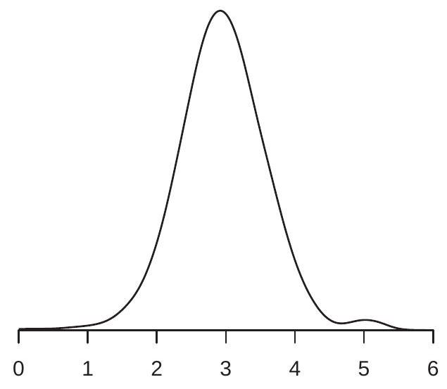
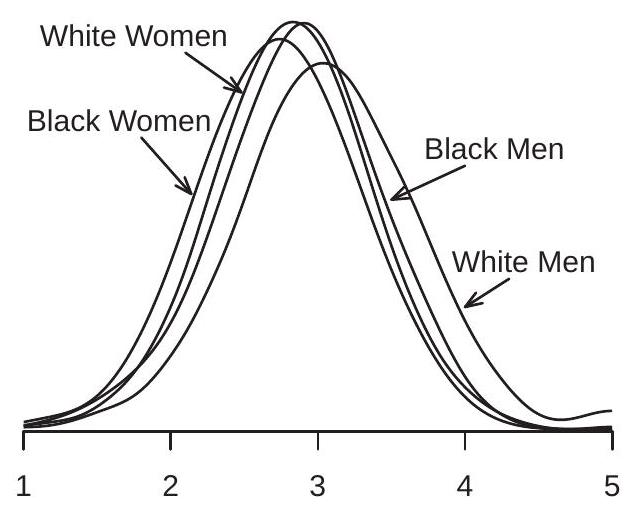
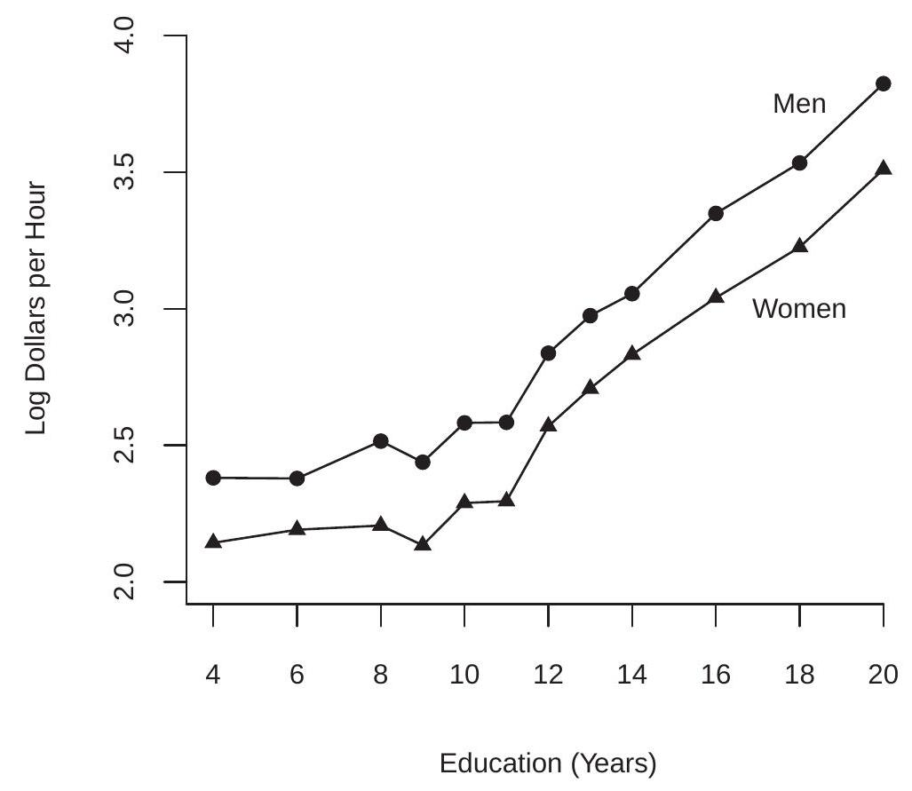
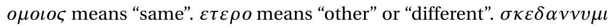
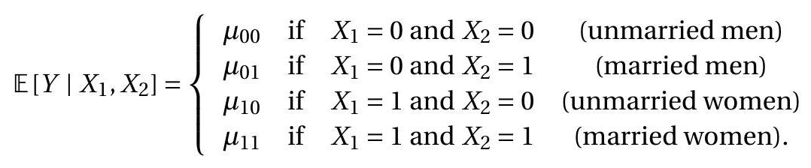
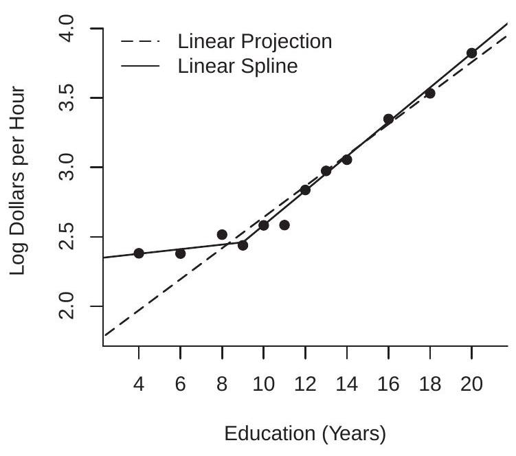
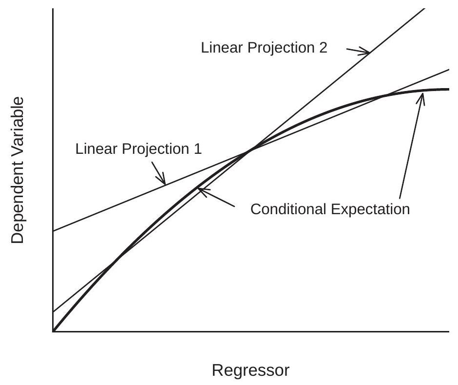
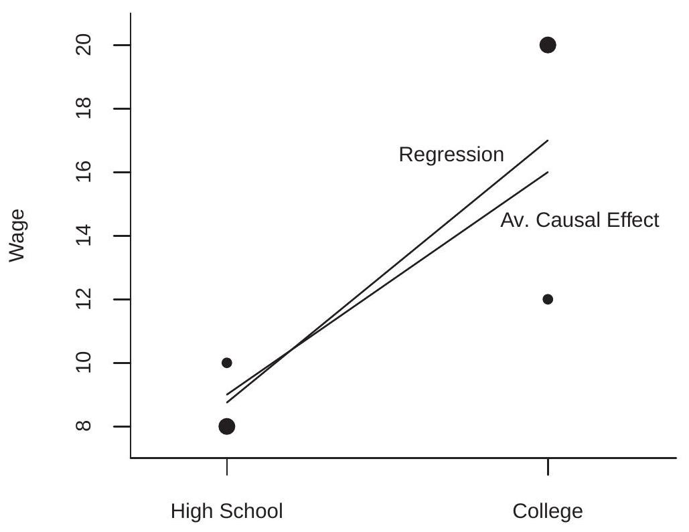

2 Conditional Expectation and Projection
2.1 Introduction
The most commonly applied econometric tool is least squares estimation, also known as regression. Least squares is a tool to estimate the conditional mean of one variable (the dependent variable) given another set of variables (the regressors, conditioning variables, or covariates).
In this chapter we abstract from estimation and focus on the probabilistic foundation of the conditional expectation model and its projection approximation. This includes a review of probability theory. For a background in intermediate probability theory see Chapters 1-5 of Probability and Statistics for Economists.
2.2 The Distribution of Wages
Suppose that we are interested in wage rates in the United States. Since wage rates vary across workers we cannot describe wage rates by a single number. Instead, we can describe wages using a probability distribution. Formally, we view the wage of an individual worker as a random variable wage with the probability distribution
\[ F(y)=\mathbb{P}[\text { wage } \leq y] . \]
When we say that a person’s wage is random we mean that we do not know their wage before it is measured, and we treat observed wage rates as realizations from the distribution \(F\). Treating unobserved wages as random variables and observed wages as realizations is a powerful mathematical abstraction which allows us to use the tools of mathematical probability.
A useful thought experiment is to imagine dialing a telephone number selected at random, and then asking the person who responds to tell us their wage rate. (Assume for simplicity that all workers have equal access to telephones and that the person who answers your call will answer honestly.) In this thought experiment, the wage of the person you have called is a single draw from the distribution \(F\) of wages in the population. By making many such phone calls we can learn the full distribution.
When a distribution function \(F\) is differentiable we define the probability density function
\[ f(y)=\frac{d}{d y} F(y) . \]
The density contains the same information as the distribution function, but the density is typically easier to visually interpret.

- Wage Density

- Log Wage Density
Figure 2.1: Density of Wages and Log Wages
In Figure 2.1(a) we display an estimate \({ }^{1}\) of the probability density function of U.S. wage rates in \(2009 .\) We see that the density is peaked around \(\$ 15\), and most of the probability mass appears to lie between \(\$ 10\) and \(\$ 40\). These are ranges for typical wage rates in the U.S. population.
Important measures of central tendency are the median and the mean. The median \(m\) of a continuous distribution \(F\) is the unique solution to
\[ F(m)=\frac{1}{2} . \]
The median U.S. wage is \(\$ 19.23\). The median is a robust \({ }^{2}\) measure of central tendency, but it is tricky to use for many calculations as it is not a linear operator.
The mean or expectation of a random variable \(Y\) with discrete support is
\[ \mu=\mathbb{E}[Y]=\sum_{j=1}^{\infty} \tau_{j} \mathbb{P}\left[Y=\tau_{j}\right] . \]
For a continuous random variable with density \(f(y)\) the expectation is
\[ \mu=\mathbb{E}[Y]=\int_{-\infty}^{\infty} y f(y) d y . \]
Here we have used the common and convenient convention of using the single character \(Y\) to denote a random variable, rather than the more cumbersome label wage. An alternative notation which includes both discrete and continuous random variables as special cases is to write the integral as \(\int_{-\infty}^{\infty} y d F(y)\).
The expectation is a convenient measure of central tendency because it is a linear operator and arises naturally in many economic models. A disadvantage of the expectation is that it is not robust \({ }^{3}\) especially
\({ }^{1}\) The distribution and density are estimated nonparametrically from the sample of 50,742 full-time non-military wageearners reported in the March 2009 Current Population Survey. The wage rate is constructed as annual individual wage and salary earnings divided by hours worked.
\({ }^{2}\) The median is not sensitive to pertubations in the tails of the distribution.
\({ }^{3}\) The expectation is sensitive to pertubations in the tails of the distribution. in the presence of substantial skewness or thick tails, both which are features of the wage distribution as can be seen in Figure 2.1(a). Another way of viewing this is that \(64 %\) of workers earn less than the mean wage of \(\$ 23.90\), suggesting that it is incorrect to describe the mean \(\$ 23.90\) as a “typical” wage rate.
In this context it is useful to transform the data by taking the natural logarithm” \({ }^{4}\). Figure \(2.1\) (b) shows the density of \(\log\) hourly wages \(\log (\) wage \()\) for the same population. The density of log wages is less skewed and fat-tailed than the density of the level of wages, so its mean
\[ \mathbb{E}[\log (\text { wage })]=2.95 \]
is a better (more robust) measure \({ }^{5}\) of central tendency of the distribution. For this reason, wage regressions typically use log wages as a dependent variable rather than the level of wages.
Another useful way to summarize the probability distribution \(F(y)\) is in terms of its quantiles. For any \(\alpha \in(0,1)\), the \(\alpha^{t h}\) quantile of the continuous \({ }^{6}\) distribution \(F\) is the real number \(q_{\alpha}\) which satisfies \(F\left(q_{\alpha}\right)=\alpha\). The quantile function \(q_{\alpha}\), viewed as a function of \(\alpha\), is the inverse of the distribution function \(F\). The most commonly used quantile is the median, that is, \(q_{0.5}=m\). We sometimes refer to quantiles by the percentile representation of \(\alpha\) and in this case they are called percentiles. E.g. the median is the \(50^{t h}\) percentile.
2.3 Conditional Expectation
We saw in Figure 2.1(b) the density of log wages. Is this distribution the same for all workers, or does the wage distribution vary across subpopulations? To answer this question, we can compare wage distributions for different groups - for example, men and women. To investigate, we plot in Figure \(2.2\) (a) the densities of log wages for U.S. men and women. We can see that the two wage densities take similar shapes but the density for men is somewhat shifted to the right.
The values \(3.05\) and \(2.81\) are the mean log wages in the subpopulations of men and women workers. They are called the conditional expectation (or conditional mean) of log wages given gender. We can write their specific values as
\[ \begin{gathered} \mathbb{E}[\log (\text { wage }) \mid \text { gender }=\text { man }]=3.05 \\ \mathbb{E}[\log (\text { wage }) \mid \text { gender }=\text { woman }]=2.81 . \end{gathered} \]
We call these expectations “conditional” as they are conditioning on a fixed value of the variable gender. While you might not think of a person’s gender as a random variable, it is random from the viewpoint of econometric analysis. If you randomly select an individual, the gender of the individual is unknown and thus random. (In the population of U.S. workers, the probability that a worker is a woman happens to be \(43 %\).) In observational data, it is most appropriate to view all measurements as random variables, and the means of subpopulations are then conditional means.
It is important to mention at this point that we in no way attribute causality or interpretation to the difference in the conditional expectation of log wages between men and women. There are multiple potential explanations.
As the two densities in Figure 2.2(a) appear similar, a hasty inference might be that there is not a meaningful difference between the wage distributions of men and women. Before jumping to this conclusion let us examine the differences in the distributions more carefully. As we mentioned above, the
\({ }^{4}\) Throughout the text, we will use \(\log (y)\) or \(\log y\) to denote the natural logarithm of \(y\).
\({ }^{5}\) More precisely, the geometric mean \(\exp (\mathbb{E}[\log W])=\$ 19.11\) is a robust measure of central tendency.
\({ }^{6}\) If \(F\) is not continuous the definition is \(q_{\alpha}=\inf \{y: F(y) \geq \alpha\}\)

- Women and Men

- By Gender and Race
Figure 2.2: Log Wage Density by Gender and Race
primary difference between the two densities appears to be their means. This difference equals
\[ \begin{aligned} \mathbb{E}[\log (\text { wage }) \mid \text { gender }=\text { man }]-\mathbb{E}[\log (\text { wage }) \mid \text { gender }=\text { woman }] &=3.05-2.81 \\ &=0.24 . \end{aligned} \]
A difference in expected log wages of \(0.24\) is often interpreted as an average \(24 %\) difference between the wages of men and women, which is quite substantial. (For a more complete explanation see Section 2.4.)
Consider further splitting the male and female subpopulations by race, dividing the population into whites, Blacks, and other races. We display the log wage density functions of four of these groups in Figure \(2.2\) (b). Again we see that the primary difference between the four density functions is their central tendency.
Focusing on the means of these distributions, Table \(2.1\) reports the mean log wage for each of the six sub-populations.
Table 2.1: Mean Log Wages by Gender and Race
| men | women | |
|---|---|---|
| white | \(3.07\) | \(2.82\) |
| Black | \(2.86\) | \(2.73\) |
| other | \(3.03\) | \(2.86\) |
Once again we stress that we in no way attribute causality or interpretation to the differences across the entries of the table. The reason why we use these particular sub-populations to illustrate conditional expectation is because differences in economic outcomes between gender and racial groups in the United States (and elsewhere) are widely discussed; part of the role of social science is to carefully document such patterns, and part of its role is to craft models and explanations. Conditional expectations (by themselves) can help in the documentation and description; conditional expectations by themselves are neither a model nor an explanation.
The entries in Table \(2.1\) are the conditional means of \(\log (\) wage \()\) given gender and race. For example
\[ \mathbb{E}[\log (\text { wage }) \mid \text { gender }=\text { man, race }=\text { white }]=3.07 \]
and
\[ \mathbb{E}[\log (\text { wage }) \mid \text { gender }=\text { woman, race }=\text { Black }]=2.73 \text {. } \]
One benefit of focusing on conditional means is that they reduce complicated distributions to a single summary measure, and thereby facilitate comparisons across groups. Because of this simplifying property, conditional means are the primary interest of regression analysis and are a major focus in econometrics.
Table \(2.1\) allows us to easily calculate average wage differences between groups. For example, we can see that the wage gap between men and women continues after disaggregation by race, as the average gap between white men and white women is \(25 %\), and that between Black men and Black women is \(13 %\). We also can see that there is a race gap, as the average wages of Blacks are substantially less than the other race categories. In particular, the average wage gap between white men and Black men is \(21 %\), and that between white women and Black women is \(9 %\).
2.4 Logs and Percentages
In this section we want to motivate and clarify the use of the logarithm in regression analysis by making two observations. First, when applied to numbers the difference of logarithms approximately equals the percentage difference. Second, when applied to averages the difference in logarithms approximately equals the percentage difference in the geometric mean. We now explain these ideas and the nature of the approximations involved.
Take two positive numbers \(a\) and \(b\). The percentage difference between \(a\) and \(b\) is
\[ p=100\left(\frac{a-b}{b}\right) . \]
Rewriting,
\[ \frac{a}{b}=1+\frac{p}{100} \]
Taking natural logarithms,
\[ \log a-\log b=\log \left(1+\frac{p}{100}\right) . \]
A useful approximation for small \(x\) is
\[ \log (1+x) \simeq x . \]
This can be derived from the infinite series expansion of \(\log (1+x)\) :
\[ \log (1+x)=x-\frac{x^{2}}{2}+\frac{x^{3}}{3}-\frac{x^{4}}{4}+\cdots=x+O\left(x^{2}\right) . \]
The symbol \(O\left(x^{2}\right.\) ) means that the remainder is bounded by \(A x^{2}\) as \(x \rightarrow 0\) for some \(A<\infty\). Numerically, the approximation \(\log (1+x) \simeq x\) is within \(0.001\) for \(|x| \leq 0.1\), and the approximation error increases with \(|x|\)
Applying (2.3) to (2.2) and multiplying by 100 we find
\[ p \simeq 100(\log a)-\log b) . \]
This shows that 100 multiplied by the difference in logarithms is approximately the percentage difference. Numerically, the approximation error is less than \(0.1\) percentage points for \(|p| \leq 10\).
Now consider the difference in the expectation of log transformed random variables. Take two random variables \(X_{1}, X_{2}>0\). Define their geometric means \(\theta_{1}=\exp \left(\mathbb{E}\left[\log X_{1}\right]\right)\) and \(\theta_{2}=\exp \left(\mathbb{E}\left[\log X_{2}\right]\right)\) and their percentage difference
\[ p=100\left(\frac{\theta_{2}-\theta_{1}}{\theta_{1}}\right) . \]
The difference in the expectation of the log transforms (multiplied by 100) is
\[ 100\left(\mathbb{E}\left[\log X_{2}\right]-\mathbb{E}\left[\log X_{1}\right]\right)=100\left(\log \theta_{2}-\log \theta_{1}\right) \simeq p \]
the percentage difference between \(\theta_{2}\) and \(\theta_{1}\). In words, the difference between the average of the log transformed variables is (approximately) the percentage difference in the geometric means.
The reason why this latter observation is important is because many econometric equations take the semi-log form
\[ \begin{aligned} &\mathbb{E}[\log Y \mid \operatorname{group}=1]=\mu_{1} \\ &\mathbb{E}[\log Y \mid \operatorname{group}=2]=\mu_{2} \end{aligned} \]
and considerable attention is given to the difference \(\mu_{1}-\mu_{2}\). For example, in the previous section we compared the average log wages for men and women and found that the difference is \(0.24\). In that section we stated that this difference is often interpreted as the average percentage difference. This is not quite right, but is not quite wrong either. What the above calculation shows is that this difference is approximately the percentage difference in the geometric mean. So \(\mu_{1}-\mu_{2}\) is an average percentage difference, where “average” refers to geometric rather than arithmetic mean.
To compare different measures of percentage difference see Table 2.2. In the first two columns we report average wages for men and women in the CPS population using four “averages”: arithmetic mean, median, geometric mean, and mean log. For both groups the arithmetic mean is higher than the median and geometric mean, and the latter two are similar to one another. This is a common feature of skewed distributions such as the wage distribution. The third column reports the percentage difference between the first two columns (using men’s wages as the base). For example, the first entry of \(34 %\) states that the mean wage for men is \(34 %\) higher than the mean wage for women. The next entries show that the median and geometric mean for men is \(26 %\) higher than those for women. The final entry in this column is 100 times the simple difference between the mean log wage, which is \(24 %\). As shown above, the difference in the mean of the log transformation is approximately the percentage difference in the geometric mean, and this approximation is excellent for differences under \(10 %\).
Let’s summarize this analysis. It is common to take logarithms of variables and make comparisons between conditional means. We have shown that these differences are measures of the percentage difference in the geometric mean. Thus the common description that the difference between expected log transforms (such as the \(0.24\) difference between those for men and women’s wages) is an approximate percentage difference (e.g. a 24% difference in men’s wages relative to women’s) is correct, so long as we realize that we are implicitly comparing geometric means.
2.5 Conditional Expectation Function
An important determinant of wages is education. In many empirical studies economists measure educational attainment by the number of years \({ }^{7}\) of schooling. We will write this variable as education.
\({ }^{7}\) Here, education is defined as years of schooling beyond kindergarten. A high school graduate has education=12, a college graduate has education=16, a Master’s degree has education=18, and a professional degree (medical, law or PhD) has educa- Table 2.2: Average Wages and Percentage Differences
| men | women | % Difference | |
|---|---|---|---|
| Arithmetic Mean | \(\$ 26.80\) | \(\$ 20.00\) | \(34 %\) |
| Median | \(\$ 21.14\) | \(\$ 16.83\) | \(26 %\) |
| Geometric Mean | \(\$ 21.03\) | \(\$ 16.64\) | \(26 %\) |
| Mean log Wage | \(3.05\) | \(2.81\) | \(24 %\) |
The conditional expectation of \(\log (\) wage \()\) given gender, race, and education is a single number for each category. For example
\[ \mathbb{E}[\log (\text { wage }) \mid \text { gender }=\text { man, race }=\text { white, education }=12]=2.84 . \]
We display in Figure \(2.3\) the conditional expectation of \(\log\) (wage) as a function of education, separately for (white) men and women. The plot is quite revealing. We see that the conditional expectation is increasing in years of education, but at a different rate for schooling levels above and below nine years. Another striking feature of Figure \(2.3\) is that the gap between men and women is roughly constant for all education levels. As the variables are measured in logs this implies a constant average percentage gap between men and women regardless of educational attainment.

Figure 2.3: Expected Log Wage as a Function of Education tion=20. In many cases it is convenient to simplify the notation by writing variables using single characters, typically \(Y, X\), and/or \(Z\). It is conventional in econometrics to denote the dependent variable (e.g. \(\log (\) wage \()\) ) by the letter \(Y\), a conditioning variable (such as gender) by the letter \(X\), and multiple conditioning variables (such as race, education and gender) by the subscripted letters \(X_{1}, X_{2}, \ldots, X_{k}\).
Conditional expectations can be written with the generic notation
\[ \mathbb{E}\left[Y \mid X_{1}=x_{1}, X_{2}=x_{2}, \ldots, X_{k}=x_{k}\right]=m\left(x_{1}, x_{2}, \ldots, x_{k}\right) \text {. } \]
We call this the conditional expectation function (CEF). The CEF is a function of \(\left(x_{1}, x_{2}, \ldots, x_{k}\right)\) as it varies with the variables. For example, the conditional expectation of \(Y=\log (\) wage \()\) given \(\left(X_{1}, X_{2}\right)=(g e n d e r\), race) is given by the six entries of Table \(2.1 .\)
For greater compactness we typically write the conditioning variables as a vector in \(\mathbb{R}^{k}\) :
\[ X=\left(\begin{array}{c} X_{1} \\ X_{2} \\ \vdots \\ X_{k} \end{array}\right) \]
Given this notation, the CEF can be compactly written as
\[ \mathbb{E}[Y \mid X=x]=m(x) . \]
The CEF \(m(x)=\mathbb{E}[Y \mid X=x]\) is a function of \(x \in \mathbb{R}^{k}\). It says: “When \(X\) takes the value \(x\) then the average value of \(Y\) is \(m(x)\).” Sometimes it is useful to view the CEF as a function of the random variable \(X\). In this case we evaluate the function \(m(x)\) at \(X\), and write \(m(X)\) or \(\mathbb{E}[Y \mid X]\). This is random as it is a function of the random variable \(X\).
2.6 Continuous Variables
In the previous sections we implicitly assumed that the conditioning variables are discrete. However, many conditioning variables are continuous. In this section, we take up this case and assume that the variables \((Y, X)\) are continuously distributed with a joint density function \(f(y, x)\).
As an example, take \(Y=\log (\) wage \()\) and \(X=\) experience, the latter the number of years of potential labor market experience \({ }^{8}\). The contours of their joint density are plotted in Figure \(2.4\) (a) for the population of white men with 12 years of education.
Given the joint density \(f(y, x)\) the variable \(x\) has the marginal density
\[ f_{X}(x)=\int_{-\infty}^{\infty} f(y, x) d y . \]
For any \(x\) such that \(f_{X}(x)>0\) the conditional density of \(Y\) given \(X\) is defined as
\[ f_{Y \mid X}(y \mid x)=\frac{f(y, x)}{f_{X}(x)} . \]
The conditional density is a renormalized slice of the joint density \(f(y, x)\) holding \(x\) fixed. The slice is renormalized (divided by \(f_{X}(x)\) so that it integrates to one) and is thus a density. We can visualize this by slicing the joint density function at a specific value of \(x\) parallel with the \(y\)-axis. For example, take the density contours in Figure 2.4(a) and slice through the contour plot at a specific value of experience, and
\({ }^{8}\) As there is no direct measure for experience, we instead define experience as age-education-6

- Joint Density of Log Wage and Experience
.jpg)
- Conditional Density of Log Wage given Experience
Figure 2.4: Log Wage and Experience
then renormalize the slice so that it is a proper density. This gives us the conditional density of log(wage) for white men with 12 years of education and this level of experience. We do this for three levels of experience \((5,10\), and 25 years), and plot these densities in Figure \(2.4\) (b). We can see that the distribution of wages shifts to the right and becomes more diffuse as experience increases.
The CEF of \(Y\) given \(X=x\) is the expectation of the conditional density (2.5)
\[ m(x)=\mathbb{E}[Y \mid X=x]=\int_{-\infty}^{\infty} y f_{Y \mid X}(y \mid x) d y . \]
Intuitively, \(m(x)\) is the expectation of \(Y\) for the idealized subpopulation where the conditioning variables are fixed at \(x\). When \(X\) is continuously distributed this subpopulation is infinitely small.
This definition (2.6) is appropriate when the conditional density (2.5) is well defined. However, Theorem \(2.13\) in Section \(2.31\) will show that \(m(x)\) can be defined for any random variables \((Y, X)\) so long as \(\mathbb{E}|Y|<\infty\)
In Figure 2.4(a) the CEF of \(\log\) (wage) given experience is plotted as the solid line. We can see that the CEF is a smooth but nonlinear function. The CEF is initially increasing in experience, flattens out around experience \(=30\), and then decreases for high levels of experience.
2.7 Law of Iterated Expectations
An extremely useful tool from probability theory is the law of iterated expectations. An important special case is known as the Simple Law. Theorem 2.1 Simple Law of Iterated Expectations
If \(\mathbb{E}|Y|<\infty\) then for any random vector \(X\),
\[ \mathbb{E}[\mathbb{E}[Y \mid X]]=\mathbb{E}[Y] . \]
This states that the expectation of the conditional expectation is the unconditional expectation. In other words the average of the conditional averages is the unconditional average. For discrete \(X\)
\[ \mathbb{E}[\mathbb{E}[Y \mid X]]=\sum_{j=1}^{\infty} \mathbb{E}\left[Y \mid X=x_{j}\right] \mathbb{P}\left[X=x_{j}\right] . \]
For continuous \(X\)
\[ \mathbb{E}[\mathbb{E}[Y \mid X]]=\int_{\mathbb{R}^{k}} \mathbb{E}[Y \mid X=x] f_{X}(x) d x . \]
Going back to our investigation of average log wages for men and women, the simple law states that
\[ \begin{aligned} &\mathbb{E}[\log (\text { wage }) \mid \text { gender }=\text { man }] \mathbb{P}[\text { gender }=\text { man }] \\ &+\mathbb{E}[\log (\text { wage }) \mid \text { gender }=\text { woman }] \mathbb{P}[\text { gender }=\text { woman }] \\ &=\mathbb{E}[\log (\text { wage })] \end{aligned} \]
Or numerically,
\[ 3.05 \times 0.57+2.81 \times 0.43=2.95 \text {. } \]
The general law of iterated expectations allows two sets of conditioning variables.
Theorem 2.2 Law of Iterated Expectations If \(\mathbb{E}|Y|<\infty\) then for any random vectors \(X_{1}\) and \(X_{2}\),
\[ \mathbb{E}\left[\mathbb{E}\left[Y \mid X_{1}, X_{2}\right] \mid X_{1}\right]=\mathbb{E}\left[Y \mid X_{1}\right] . \]
Notice the way the law is applied. The inner expectation conditions on \(X_{1}\) and \(X_{2}\), while the outer expectation conditions only on \(X_{1}\). The iterated expectation yields the simple answer \(\mathbb{E}\left[Y \mid X_{1}\right]\), the expectation conditional on \(X_{1}\) alone. Sometimes we phrase this as: “The smaller information set wins.”
As an example
\[ \begin{aligned} &\mathbb{E}[\log (\text { wage }) \mid \text { gender }=\text { man, race }=\text { white }] \mathbb{P}[\text { race }=\text { white } \mid \text { gender }=\text { man }] \\ &+\mathbb{E}[\log (\text { wage }) \mid \text { gender }=\text { man, race }=\text { Black }] \mathbb{P}[\text { race }=\text { Black } \mid \text { gender }=\text { man }] \\ &+\mathbb{E}[\log (\text { wage }) \mid \text { gender }=\text { man, race }=\text { other }] \mathbb{P}[\text { race }=\text { other } \mid \text { gender }=\text { man }] \\ &=\mathbb{E}[\log (\text { wage }) \mid \text { gender }=\text { man }] \end{aligned} \]
or numerically
\[ 3.07 \times 0.84+2.86 \times 0.08+3.03 \times 0.08=3.05 \text {. } \]
A property of conditional expectations is that when you condition on a random vector \(X\) you can effectively treat it as if it is constant. For example, \(\mathbb{E}[X \mid X]=X\) and \(\mathbb{E}[g(X) \mid X]=g(X)\) for any function \(g(\cdot)\). The general property is known as the Conditioning Theorem.
Theorem 2.3 Conditioning Theorem If \(\mathbb{E}|Y|<\infty\) then
\[ \mathbb{E}[g(X) Y \mid X]=g(X) \mathbb{E}[Y \mid X] . \]
If in addition \(\mathbb{E}|g(X)|<\infty\) then
\[ \mathbb{E}[g(X) Y]=\mathbb{E}[g(X) \mathbb{E}[Y \mid X]] . \]
The proofs of Theorems 2.1, \(2.2\) and \(2.3\) are given in Section \(2.33 .\)
2.8 CEF Error
The CEF error \(e\) is defined as the difference between \(Y\) and the CEF evaluated at \(X\) :
\[ e=Y-m(X) . \]
By construction, this yields the formula
\[ Y=m(X)+e . \]
In (2.9) it is useful to understand that the error \(e\) is derived from the joint distribution of \((Y, X)\), and so its properties are derived from this construction.
Many authors in econometrics denote the CEF error using the Greek letter \(\varepsilon\). I do not follow this convention because the error \(e\) is a random variable similar to \(Y\) and \(X\), and it is typical to use Latin characters for random variables.
A key property of the CEF error is that it has a conditional expectation of zero. To see this, by the linearity of expectations, the definition \(m(X)=\mathbb{E}[Y \mid X]\), and the Conditioning Theorem
\[ \begin{aligned} \mathbb{E}[e \mid X] &=\mathbb{E}[(Y-m(X)) \mid X] \\ &=\mathbb{E}[Y \mid X]-\mathbb{E}[m(X) \mid X] \\ &=m(X)-m(X)=0 . \end{aligned} \]
This fact can be combined with the law of iterated expectations to show that the unconditional expectation is also zero.
\[ \mathbb{E}[e]=\mathbb{E}[\mathbb{E}[e \mid X]]=\mathbb{E}[0]=0 . \]
We state this and some other results formally.
Theorem 2.4 Properties of the CEF error
If \(\mathbb{E}|Y|<\infty\) then
\(\mathbb{E}[e \mid X]=0\).
\(\mathbb{E}[e]=0\).
If \(\mathbb{E}|Y|^{r}<\infty\) for \(r \geq 1\) then \(\mathbb{E}|e|^{r}<\infty\).
For any function \(h(x)\) such that \(\mathbb{E}|h(X) e|<\infty\) then \(\mathbb{E}[h(X) e]=0\). The proof of the third result is deferred to Section 2.33. The fourth result, whose proof is left to Exercise 2.3, implies that \(e\) is uncorrelated with any function of the regressors.
The equations
\[ \begin{aligned} Y &=m(X)+e \\ \mathbb{E}[e \mid X] &=0 \end{aligned} \]
together imply that \(m(X)\) is the CEF of \(Y\) given \(X\). It is important to understand that this is not a restriction. These equations hold true by definition.
The condition \(\mathbb{E}[e \mid X]=0\) is implied by the definition of \(e\) as the difference between \(Y\) and the CEF \(m(X)\). The equation \(\mathbb{E}[e \mid X]=0\) is sometimes called a conditional mean restriction, because the conditional mean of the error \(e\) is restricted to equal zero. The property is also sometimes called mean independence, for the conditional mean of \(e\) is 0 and thus independent of \(X\). However, it does not imply that the distribution of \(e\) is independent of \(X\). Sometimes the assumption ” \(e\) is independent of \(X\) ” is added as a convenient simplification, but it is not generic feature of the conditional mean. Typically and generally, \(e\) and \(X\) are jointly dependent even though the conditional mean of \(e\) is zero.
As an example, the contours of the joint density of the regression error \(e\) and experience are plotted in Figure \(2.5\) for the same population as Figure 2.4. Notice that the shape of the conditional distribution varies with the level of experience.

Labor Market Experience (Years)
Figure 2.5: Joint Density of Regression Error and Experience
As a simple example of a case where \(X\) and \(e\) are mean independent yet dependent let \(e=X u\) where \(X\) and \(u\) are independent \(\mathrm{N}(0,1)\). Then conditional on \(X\) the error \(e\) has the distribution \(\mathrm{N}\left(0, X^{2}\right)\). Thus \(\mathbb{E}[e \mid X]=0\) and \(e\) is mean independent of \(X\), yet \(e\) is not fully independent of \(X\). Mean independence does not imply full independence.
2.9 Intercept-Only Model
A special case of the regression model is when there are no regressors \(X\). In this case \(m(X)=\mathbb{E}[Y]=\mu\), the unconditional expectation of \(Y\). We can still write an equation for \(Y\) in the regression format:
\[ \begin{aligned} Y &=\mu+e \\ \mathbb{E}[e] &=0 . \end{aligned} \]
This is useful for it unifies the notation.
2.10 Regression Variance
An important measure of the dispersion about the CEF function is the unconditional variance of the CEF error \(e\). We write this as
\[ \sigma^{2}=\operatorname{var}[e]=\mathbb{E}\left[(e-\mathbb{E}[e])^{2}\right]=\mathbb{E}\left[e^{2}\right] . \]
Theorem 2.4.3 implies the following simple but useful result.
Theorem 2.5 If \(\mathbb{E}\left[Y^{2}\right]<\infty\) then \(\sigma^{2}<\infty\).
We can call \(\sigma^{2}\) the regression variance or the variance of the regression error. The magnitude of \(\sigma^{2}\) measures the amount of variation in \(Y\) which is not “explained” or accounted for in the conditional expectation \(\mathbb{E}[Y \mid X]\).
The regression variance depends on the regressors \(X\). Consider two regressions
\[ \begin{aligned} &Y=\mathbb{E}\left[Y \mid X_{1}\right]+e_{1} \\ &Y=\mathbb{E}\left[Y \mid X_{1}, X_{2}\right]+e_{2} . \end{aligned} \]
We write the two errors distinctly as \(e_{1}\) and \(e_{2}\) as they are different - changing the conditioning information changes the conditional expectation and therefore the regression error as well.
In our discussion of iterated expectations we have seen that by increasing the conditioning set the conditional expectation reveals greater detail about the distribution of \(Y\). What is the implication for the regression error?
It turns out that there is a simple relationship. We can think of the conditional expectation \(\mathbb{E}[Y \mid X]\) as the “explained portion” of \(Y\). The remainder \(e=Y-\mathbb{E}[Y \mid X]\) is the “unexplained portion”. The simple relationship we now derive shows that the variance of this unexplained portion decreases when we condition on more variables. This relationship is monotonic in the sense that increasing the amount of information always decreases the variance of the unexplained portion.
Theorem 2.6 If \(\mathbb{E}\left[Y^{2}\right]<\infty\) then
\[ \operatorname{var}[Y] \geq \operatorname{var}\left[Y-\mathbb{E}\left[Y \mid X_{1}\right]\right] \geq \operatorname{var}\left[Y-\mathbb{E}\left[Y \mid X_{1}, X_{2}\right]\right] . \]
Theorem \(2.6\) says that the variance of the difference between \(Y\) and its conditional expectation (weakly) decreases whenever an additional variable is added to the conditioning information.
The proof of Theorem \(2.6\) is given in Section 2.33.
2.11 Best Predictor
Suppose that given a random vector \(X\) we want to predict or forecast \(Y\). We can write any predictor as a function \(g(X)\) of \(X\). The (ex-post) prediction error is the realized difference \(Y-g(X)\). A non-stochastic measure of the magnitude of the prediction error is the expectation of its square
\[ \mathbb{E}\left[(Y-g(X))^{2}\right] . \]
We can define the best predictor as the function \(g(X)\) which minimizes (2.10). What function is the best predictor? It turns out that the answer is the CEF \(m(X)\). This holds regardless of the joint distribution of \((Y, X)\).
To see this, note that the mean squared error of a predictor \(g(X)\) is
\[ \begin{aligned} \mathbb{E}\left[(Y-g(X))^{2}\right] &=\mathbb{E}\left[(e+m(X)-g(X))^{2}\right] \\ &=\mathbb{E}\left[e^{2}\right]+2 \mathbb{E}[e(m(X)-g(X))]+\mathbb{E}\left[(m(X)-g(X))^{2}\right] \\ &=\mathbb{E}\left[e^{2}\right]+\mathbb{E}\left[(m(X)-g(X))^{2}\right] \\ & \geq \mathbb{E}\left[e^{2}\right] \\ &=\mathbb{E}\left[(Y-m(X))^{2}\right] . \end{aligned} \]
The first equality makes the substitution \(Y=m(X)+e\) and the third equality uses Theorem 2.4.4. The right-hand-side after the third equality is minimized by setting \(g(X)=m(X)\), yielding the inequality in the fourth line. The minimum is finite under the assumption \(\mathbb{E}\left[Y^{2}\right]<\infty\) as shown by Theorem \(2.5\).
We state this formally in the following result.
Theorem 2.7 Conditional Expectation as Best Predictor If \(\mathbb{E}\left[Y^{2}\right]<\infty\), then for any predictor \(g(X)\),
\[ \mathbb{E}\left[(Y-g(X))^{2}\right] \geq \mathbb{E}\left[(Y-m(X))^{2}\right] \]
where \(m(X)=\mathbb{E}[Y \mid X]\)
It may be helpful to consider this result in the context of the intercept-only model
\[ \begin{aligned} Y &=\mu+e \\ \mathbb{E}[e] &=0 . \end{aligned} \]
Theorem \(2.7\) shows that the best predictor for \(Y\) (in the class of constants) is the unconditional mean \(\mu=\mathbb{E}[Y]\) in the sense that the mean minimizes the mean squared prediction error.
2.12 Conditional Variance
While the conditional mean is a good measure of the location of a conditional distribution it does not provide information about the spread of the distribution. A common measure of the dispersion is the conditional variance. We first give the general definition of the conditional variance of a random variable \(Y\).
Definition 2.1 If \(\mathbb{E}\left[Y^{2}\right]<\infty\), the conditional variance of \(Y\) given \(X=x\) is
\[ \sigma^{2}(x)=\operatorname{var}[Y \mid X=x]=\mathbb{E}\left[(Y-\mathbb{E}[Y \mid X=x])^{2} \mid X=x\right] . \]
The conditional variance treated as a random variable is \(\operatorname{var}[Y \mid X]=\sigma^{2}(X)\).
The conditional variance is distinct from the unconditional variance var \([Y]\). The difference is that the conditional variance is a function of the conditioning variables. Notice that the conditional variance is the conditional second moment, centered around the conditional first moment.
Given this definition we define the conditional variance of the regression error.
Definition 2.2 If \(\mathbb{E}\left[e^{2}\right]<\infty\), the conditional variance of the regression error \(e\) given \(X=x\) is
\[ \sigma^{2}(x)=\operatorname{var}[e \mid X=x]=\mathbb{E}\left[e^{2} \mid X=x\right] . \]
The conditional variance of \(e\) treated as a random variable is \(\operatorname{var}[e \mid X]=\sigma^{2}(X)\).
Again, the conditional variance \(\sigma^{2}(x)\) is distinct from the unconditional variance \(\sigma^{2}\). The conditional variance is a function of the regressors, the unconditional variance is not. Generally, \(\sigma^{2}(x)\) is a non-trivial function of \(x\) and can take any form subject to the restriction that it is non-negative. One way to think about \(\sigma^{2}(x)\) is that it is the conditional mean of \(e^{2}\) given \(X\). Notice as well that \(\sigma^{2}(x)=\operatorname{var}[Y \mid X=x]\) so it is equivalently the conditional variance of the dependent variable.
The variance of \(Y\) is in a different unit of measurement than \(Y\). To convert the variance to the same unit of measure we define the conditional standard deviation as its square root \(\sigma(x)=\sqrt{\sigma^{2}(x)}\).
As an example of how the conditional variance depends on observables, compare the conditional log wage densities for men and women displayed in Figure 2.2. The difference between the densities is not purely a location shift but is also a difference in spread. Specifically, we can see that the density for men’s log wages is somewhat more spread out than that for women, while the density for women’s wages is somewhat more peaked. Indeed, the conditional standard deviation for men’s wages is \(3.05\) and that for women is \(2.81\). So while men have higher average wages they are also somewhat more dispersed.
The unconditional variance is related to the conditional variance by the following identity.
Theorem 2.8 If \(\mathbb{E}\left[Y^{2}\right]<\infty\) then
\[ \operatorname{var}[Y]=\mathbb{E}[\operatorname{var}[Y \mid X]]+\operatorname{var}[\mathbb{E}[Y \mid X]] . \]
See Theorem \(4.14\) of Probability and Statistics for Economists. Theorem \(2.8\) decomposes the unconditional variance into what are sometimes called the “within group variance” and the “across group variance”. For example, if \(X\) is education level, then the first term is the expected variance of the conditional expectation by education level. The second term is the variance after controlling for education.
The regression error has a conditional mean of zero, so its unconditional error variance equals the expected conditional variance, or equivalently can be found by the law of iterated expectations.
\[ \sigma^{2}=\mathbb{E}\left[e^{2}\right]=\mathbb{E}\left[\mathbb{E}\left[e^{2} \mid X\right]\right]=\mathbb{E}\left[\sigma^{2}(X)\right] . \]
That is, the unconditional error variance is the average conditional variance.
Given the conditional variance we can define a rescaled error
\[ u=\frac{e}{\sigma(X)} \text {. } \]
We calculate that since \(\sigma(X)\) is a function of \(X\)
\[ \mathbb{E}[u \mid X]=\mathbb{E}\left[\frac{e}{\sigma(X)} \mid X\right]=\frac{1}{\sigma(X)} \mathbb{E}[e \mid X]=0 \]
and
\[ \operatorname{var}[u \mid X]=\mathbb{E}\left[u^{2} \mid X\right]=\mathbb{E}\left[\frac{e^{2}}{\sigma^{2}(X)} \mid X\right]=\frac{1}{\sigma^{2}(X)} \mathbb{E}\left[e^{2} \mid X\right]=\frac{\sigma^{2}(X)}{\sigma^{2}(X)}=1 . \]
Thus \(u\) has a conditional expectation of zero and a conditional variance of 1 .
Notice that (2.11) can be rewritten as
\[ e=\sigma(X) u . \]
and substituting this for \(e\) in the CEF equation (2.9), we find that
\[ Y=m(X)+\sigma(X) u . \]
This is an alternative (mean-variance) representation of the CEF equation.
Many econometric studies focus on the conditional expectation \(m(x)\) and either ignore the conditional variance \(\sigma^{2}(x)\), treat it as a constant \(\sigma^{2}(x)=\sigma^{2}\), or treat it as a nuisance parameter (a parameter not of primary interest). This is appropriate when the primary variation in the conditional distribution is in the mean but can be short-sighted in other cases. Dispersion is relevant to many economic topics, including income and wealth distribution, economic inequality, and price dispersion. Conditional dispersion (variance) can be a fruitful subject for investigation.
The perverse consequences of a narrow-minded focus on the mean is parodied in a classic joke:
An economist was standing with one foot in a bucket of boiling water and the other foot in a bucket of ice. When asked how he felt, he replied, “On average I feel just fine.”
Clearly, the economist in question ignored variance!
2.13 Homoskedasticity and Heteroskedasticity
An important special case obtains when the conditional variance \(\sigma^{2}(x)\) is a constant and independent of \(x\). This is called homoskedasticity.
Definition 2.3 The error is homoskedastic if \(\sigma^{2}(x)=\sigma^{2}\) does not depend on \(x\).
In the general case where \(\sigma^{2}(x)\) depends on \(x\) we say that the error \(e\) is heteroskedastic.
Definition 2.4 The error is heteroskedastic if \(\sigma^{2}(x)\) depends on \(x\).
It is helpful to understand that the concepts homoskedasticity and heteroskedasticity concern the conditional variance, not the unconditional variance. By definition, the unconditional variance \(\sigma^{2}\) is a constant and independent of the regressors \(X\). So when we talk about the variance as a function of the regressors we are talking about the conditional variance \(\sigma^{2}(x)\).
Some older or introductory textbooks describe heteroskedasticity as the case where “the variance of \(e\) varies across observations”. This is a poor and confusing definition. It is more constructive to understand that heteroskedasticity means that the conditional variance \(\sigma^{2}(x)\) depends on observables.
Older textbooks also tend to describe homoskedasticity as a component of a correct regression specification and describe heteroskedasticity as an exception or deviance. This description has influenced many generations of economists but it is unfortunately backwards. The correct view is that heteroskedasticity is generic and “standard”, while homoskedasticity is unusual and exceptional. The default in empirical work should be to assume that the errors are heteroskedastic, not the converse.
In apparent contradiction to the above statement we will still frequently impose the homoskedasticity assumption when making theoretical investigations into the properties of estimation and inference methods. The reason is that in many cases homoskedasticity greatly simplifies the theoretical calculations and it is therefore quite advantageous for teaching and learning. It should always be remembered, however, that homoskedasticity is never imposed because it is believed to be a correct feature of an empirical model but rather because of its simplicity.
2.14 Heteroskedastic or Heteroscedastic?
The spelling of the words homoskedastic and heteroskedastic have been somewhat controversial. Early econometrics textbooks were split, with some using a “c” as in heteroscedastic and some ” \(\mathrm{k}\) ” as in heteroskedastic. McCulloch (1985) pointed out that the word is derived from Greek roots.
\ means “to scatter”. Since the proper transliteration of the Greek letter \(\kappa\) in \(\sigma \kappa \varepsilon \delta \alpha v v v \mu \iota\) is ” \(\mathrm{k}\) “, this implies that the correct English spelling of the two words is with a” \(\mathrm{k}\) ” as in homoskedastic and heteroskedastic.
2.15 Regression Derivative
One way to interpret the CEF \(m(x)=\mathbb{E}[Y \mid X=x]\) is in terms of how marginal changes in the regressors \(X\) imply changes in the conditional expectation of the response variable \(Y\). It is typical to consider marginal changes in a single regressor, say \(X_{1}\), holding the remainder fixed. When a regressor \(X_{1}\) is continuously distributed, we define the marginal effect of a change in \(X_{1}\), holding the variables \(X_{2}, \ldots, X_{k}\) fixed, as the partial derivative of the CEF
\[ \frac{\partial}{\partial x_{1}} m\left(x_{1}, \ldots, x_{k}\right) \]
When \(X_{1}\) is discrete we define the marginal effect as a discrete difference. For example, if \(X_{1}\) is binary, then the marginal effect of \(X_{1}\) on the CEF is
\[ m\left(1, x_{2}, \ldots, x_{k}\right)-m\left(0, x_{2}, \ldots, x_{k}\right) \]
We can unify the continuous and discrete cases with the notation
\[ \nabla_{1} m(x)=\left\{\begin{array}{cc} \frac{\partial}{\partial x_{1}} m\left(x_{1}, \ldots, x_{k}\right), & \text { if } X_{1} \text { is continuous } \\ m\left(1, x_{2}, \ldots, x_{k}\right)-m\left(0, x_{2}, \ldots, x_{k}\right), & \text { if } X_{1} \text { is binary. } \end{array}\right. \]
Collecting the \(k\) effects into one \(k \times 1\) vector, we define the regression derivative with respect to \(X\) :
\[ \nabla m(x)=\left[\begin{array}{c} \nabla_{1} m(x) \\ \nabla_{2} m(x) \\ \vdots \\ \nabla_{k} m(x) \end{array}\right] \]
When all elements of \(X\) are continuous, then we have the simplification \(\nabla m(x)=\frac{\partial}{\partial x} m(x)\), the vector of partial derivatives.
There are two important points to remember concerning our definition of the regression derivative. First, the effect of each variable is calculated holding the other variables constant. This is the ceteris paribus concept commonly used in economics. But in the case of a regression derivative, the conditional expectation does not literally hold all else constant. It only holds constant the variables included in the conditional expectation. This means that the regression derivative depends on which regressors are included. For example, in a regression of wages on education, experience, race and gender, the regression derivative with respect to education shows the marginal effect of education on expected wages, holding constant experience, race, and gender. But it does not hold constant an individual’s unobservable characteristics (such as ability), nor variables not included in the regression (such as the quality of education).
Second, the regression derivative is the change in the conditional expectation of \(Y\), not the change in the actual value of \(Y\) for an individual. It is tempting to think of the regression derivative as the change in the actual value of \(Y\), but this is not a correct interpretation. The regression derivative \(\nabla m(x)\) is the change in the actual value of \(Y\) only if the error \(e\) is unaffected by the change in the regressor \(X\). We return to a discussion of causal effects in Section 2.30.
2.16 Linear CEF
An important special case is when the CEF \(m(x)=\mathbb{E}[Y \mid X=x]\) is linear in \(x\). In this case we can write the mean equation as
\[ m(x)=x_{1} \beta_{1}+x_{2} \beta_{2}+\cdots+x_{k} \beta_{k}+\beta_{k+1} . \]
Notationally it is convenient to write this as a simple function of the vector \(x\). An easy way to do so is to augment the regressor vector \(X\) by listing the number ” 1 ” as an element. We call this the “constant” and the corresponding coefficient is called the “intercept”. Equivalently, specify that the final element \({ }^{9}\) of the vector \(x\) is \(x_{k}=1\). Thus (2.4) has been redefined as the \(k \times 1\) vector
\[ X=\left(\begin{array}{c} X_{1} \\ X_{2} \\ \vdots \\ X_{k-1} \\ 1 \end{array}\right) \]
With this redefinition, the CEF is
\[ m(x)=x_{1} \beta_{1}+x_{2} \beta_{2}+\cdots+\beta_{k}=x^{\prime} \beta \]
where
\[ \beta=\left(\begin{array}{c} \beta_{1} \\ \vdots \\ \beta_{k} \end{array}\right) \]
is a \(k \times 1\) coefficient vector. This is the linear CEF model. It is also often called the linear regression model, or the regression of \(Y\) on \(X\).
In the linear CEF model the regression derivative is simply the coefficient vector. That is \(\nabla m(x)=\beta\). This is one of the appealing features of the linear CEF model. The coefficients have simple and natural interpretations as the marginal effects of changing one variable, holding the others constant.
\[ \begin{aligned} &\text { Linear CEF Model } \\ &\begin{aligned} Y &=X^{\prime} \beta+e \\ \mathbb{E}[e \mid X] &=0 \end{aligned} \end{aligned} \]
If in addition the error is homoskedastic we call this the homoskedastic linear CEF model.
2.17 Homoskedastic Linear CEF Model
\[ \begin{aligned} Y &=X^{\prime} \beta+e \\ \mathbb{E}[e \mid X] &=0 \\ \mathbb{E}\left[e^{2} \mid X\right] &=\sigma^{2} \end{aligned} \]
\({ }^{9}\) The order doesn’t matter. It could be any element.
2.18 Linear CEF with Nonlinear Effects
The linear CEF model of the previous section is less restrictive than it might appear, as we can include as regressors nonlinear transformations of the original variables. In this sense, the linear CEF framework is flexible and can capture many nonlinear effects.
For example, suppose we have two scalar variables \(X_{1}\) and \(X_{2}\). The CEF could take the quadratic form
\[ m\left(x_{1}, x_{2}\right)=x_{1} \beta_{1}+x_{2} \beta_{2}+x_{1}^{2} \beta_{3}+x_{2}^{2} \beta_{4}+x_{1} x_{2} \beta_{5}+\beta_{6} . \]
This equation is quadratic in the regressors \(\left(x_{1}, x_{2}\right)\) yet linear in the coefficients \(\beta=\left(\beta_{1}, \ldots, \beta_{6}\right)^{\prime}\). We still call (2.14) a linear CEF because it is a linear function of the coefficients. At the same time, it has nonlinear effects because it is nonlinear in the underlying variables \(x_{1}\) and \(x_{2}\). The key is to understand that (2.14) is quadratic in the variables \(\left(x_{1}, x_{2}\right)\) yet linear in the coefficients \(\beta\).
To simplify the expression we define the transformations \(x_{3}=x_{1}^{2}, x_{4}=x_{2}^{2}, x_{5}=x_{1} x_{2}\), and \(x_{6}=1\), and redefine the regressor vector as \(x=\left(x_{1}, \ldots, x_{6}\right)^{\prime}\). With this redefinition, \(m\left(x_{1}, x_{2}\right)=x^{\prime} \beta\) which is linear in \(\beta\). For most econometric purposes (estimation and inference on \(\beta\) ) the linearity in \(\beta\) is all that is important.
An exception is in the analysis of regression derivatives. In nonlinear equations such as (2.14) the regression derivative should be defined with respect to the original variables not with respect to the transformed variables. Thus
\[ \begin{aligned} &\frac{\partial}{\partial x_{1}} m\left(x_{1}, x_{2}\right)=\beta_{1}+2 x_{1} \beta_{3}+x_{2} \beta_{5} \\ &\frac{\partial}{\partial x_{2}} m\left(x_{1}, x_{2}\right)=\beta_{2}+2 x_{2} \beta_{4}+x_{1} \beta_{5} . \end{aligned} \]
We see that in the model (2.14), the regression derivatives are not a simple coefficient, but are functions of several coefficients plus the levels of \(\left(x_{1}, x_{2}\right)\). Consequently it is difficult to interpret the coefficients individually. It is more useful to interpret them as a group.
We typically call \(\beta_{5}\) the interaction effect. Notice that it appears in both regression derivative equations and has a symmetric interpretation in each. If \(\beta_{5}>0\) then the regression derivative with respect to \(x_{1}\) is increasing in the level of \(x_{2}\) (and the regression derivative with respect to \(x_{2}\) is increasing in the level of \(x_{1}\) ), while if \(\beta_{5}<0\) the reverse is true.
2.19 Linear CEF with Dummy Variables
When all regressors take a finite set of values it turns out the CEF can be written as a linear function of regressors.
This simplest example is a binary variable which takes only two distinct values. For example, in traditional data sets the variable gender takes only the values man and woman (or male and female). Binary variables are extremely common in econometric applications and are alternatively called dummy variables or indicator variables.
Consider the simple case of a single binary regressor. In this case the conditional expectation can only take two distinct values. For example,
\[ \mathbb{E}[Y \mid \text { gender }]=\left\{\begin{array}{llc} \mu_{0} & \text { if } \quad \text { gender }=\text { man } \\ \mu_{1} & \text { if gender }=\text { woman. } \end{array}\right. \]
To facilitate a mathematical treatment we record dummy variables with the values \(\{0,1\}\). For example
\[ X_{1}=\left\{\begin{array}{llc} 0 & \text { if } & \text { gender }=\text { man } \\ 1 & \text { if } & \text { gender }=\text { woman } . \end{array}\right. \]
Given this notation we write the conditional expectation as a linear function of the dummy variable \(X_{1}\). Thus \(\mathbb{E}\left[Y \mid X_{1}\right]=\beta_{1} X_{1}+\beta_{2}\) where \(\beta_{1}=\mu_{1}-\mu_{0}\) and \(\beta_{2}=\mu_{0}\). In this simple regression equation the intercept \(\beta_{2}\) is equal to the conditional expectation of \(Y\) for the \(X_{1}=0\) subpopulation (men) and the slope \(\beta_{1}\) is equal to the difference in the conditional expectations between the two subpopulations.
Alternatively, we could have defined \(X_{1}\) as
\[ X_{1}= \begin{cases}1 & \text { if } \quad \text { gender }=\text { man } \\ 0 & \text { if } \quad \text { gender }=\text { woman } .\end{cases} \]
In this case, the regression intercept is the expectation for women (rather than for men) and the regression slope has switched signs. The two regressions are equivalent but the interpretation of the coefficients has changed. Therefore it is always important to understand the precise definitions of the variables, and illuminating labels are helpful. For example, labelling \(X_{1}\) as “gender” does not help distinguish between definitions (2.15) and (2.16). Instead, it is better to label \(X_{1}\) as “women” or “female” if definition (2.15) is used, or as “men” or “male” if (2.16) is used.
Now suppose we have two dummy variables \(X_{1}\) and \(X_{2}\). For example, \(X_{2}=1\) if the person is married, else \(X_{2}=0\). The conditional expectation given \(X_{1}\) and \(X_{2}\) takes at most four possible values:

In this case we can write the conditional mean as a linear function of \(X, X_{2}\) and their product \(X_{1} X_{2}\) :
\[ \mathbb{E}\left[Y \mid X_{1}, X_{2}\right]=\beta_{1} X_{1}+\beta_{2} X_{2}+\beta_{3} X_{1} X_{2}+\beta_{4} \]
where \(\beta_{1}=\mu_{10}-\mu_{00}, \beta_{2}=\mu_{01}-\mu_{00}, \beta_{3}=\mu_{11}-\mu_{10}-\mu_{01}+\mu_{00}\), and \(\beta_{4}=\mu_{00}\).
We can view the coefficient \(\beta_{1}\) as the effect of gender on expected log wages for unmarried wage earners, the coefficient \(\beta_{2}\) as the effect of marriage on expected log wages for men wage earners, and the coefficient \(\beta_{3}\) as the difference between the effects of marriage on expected log wages among women and among men. Alternatively, it can also be interpreted as the difference between the effects of gender on expected log wages among married and non-married wage earners. Both interpretations are equally valid. We often describe \(\beta_{3}\) as measuring the interaction between the two dummy variables, or the interaction effect, and describe \(\beta_{3}=0\) as the case when the interaction effect is zero.
In this setting we can see that the CEF is linear in the three variables \(\left(X_{1}, X_{2}, X_{1} X_{2}\right)\). To put the model in the framework of Section \(2.15\) we define the regressor \(X_{3}=X_{1} X_{2}\) and the regressor vector as
\[ X=\left(\begin{array}{c} X_{1} \\ X_{2} \\ X_{3} \\ 1 \end{array}\right) . \]
So while we started with two dummy variables, the number of regressors (including the intercept) is four.
If there are three dummy variables \(X_{1}, X_{2}, X_{3}\), then \(\mathbb{E}\left[Y \mid X_{1}, X_{2}, X_{3}\right]\) takes at most \(2^{3}=8\) distinct values and can be written as the linear function
\[ \mathbb{E}\left[Y \mid X_{1}, X_{2}, X_{3}\right]=\beta_{1} X_{1}+\beta_{2} X_{2}+\beta_{3} X_{3}+\beta_{4} X_{1} X_{2}+\beta_{5} X_{1} X_{3}+\beta_{6} X_{2} X_{3}+\beta_{7 X 1} X_{2} X_{3}+\beta_{8} \]
which has eight regressors including the intercept. In general, if there are \(p\) dummy variables \(X_{1}, \ldots, X_{p}\) then the CEF \(\mathbb{E}\left[Y \mid X_{1}, X_{2}, \ldots, X_{p}\right]\) takes at most \(2^{p}\) distinct values and can be written as a linear function of the \(2^{p}\) regressors including \(X_{1}, X_{2}, \ldots, X_{p}\) and all cross-products. A linear regression model which includes all \(2^{p}\) binary interactions is called a saturated dummy variable regression model. It is a complete model of the conditional expectation. In contrast, a model with no interactions equals
\[ \mathbb{E}\left[Y \mid X_{1}, X_{2}, \ldots, X_{p}\right]=\beta_{1} X_{1}+\beta_{2} X_{2}+\cdots+\beta_{p} X_{p}+\beta_{p} . \]
This has \(p+1\) coefficients instead of \(2^{p}\).
We started this section by saying that the conditional expectation is linear whenever all regressors take only a finite number of possible values. How can we see this? Take a categorical variable, such as race. For example, we earlier divided race into three categories. We can record categorical variables using numbers to indicate each category, for example
\[ X_{3}=\left\{\begin{array}{lll} 1 & \text { if } & \text { white } \\ 2 & \text { if } & \text { Black } \\ 3 & \text { if } & \text { other. } \end{array}\right. \]
When doing so, the values of \(X_{3}\) have no meaning in terms of magnitude, they simply indicate the relevant category.
When the regressor is categorical the conditional expectation of \(Y\) given \(X_{3}\) takes a distinct value for each possibility:
\[ \mathbb{E}\left[Y \mid X_{3}\right]=\left\{\begin{array}{lll} \mu_{1} & \text { if } & X_{3}=1 \\ \mu_{2} & \text { if } & X_{3}=2 \\ \mu_{3} & \text { if } & X_{3}=3 . \end{array}\right. \]
This is not a linear function of \(X_{3}\) itself, but it can be made a linear function by constructing dummy variables for two of the three categories. For example
\[ \begin{aligned} &X_{4}=\left\{\begin{array}{llc} 1 & \text { if } & \text { Black } \\ 0 & \text { if } & \text { not Black } \end{array}\right. \\ &X_{5}=\left\{\begin{array}{lll} 1 & \text { if } & \text { other } \\ 0 & \text { if } & \text { not other. } \end{array}\right. \end{aligned} \]
In this case, the categorical variable \(X_{3}\) is equivalent to the pair of dummy variables \(\left(X_{4}, X_{5}\right)\). The explicit relationship is
\[ X_{3}=\left\{\begin{array}{lll} 1 & \text { if } & X_{4}=0 \text { and } X_{5}=0 \\ 2 & \text { if } & X_{4}=1 \text { and } X_{5}=0 \\ 3 & \text { if } & X_{4}=0 \text { and } X_{5}=1 \end{array}\right. \]
Given these transformations, we can write the conditional expectation of \(Y\) as a linear function of \(X_{4}\) and \(X_{5}\)
\[ \mathbb{E}\left[Y \mid X_{3}\right]=\mathbb{E}\left[Y \mid X_{4}, X_{5}\right]=\beta_{1} X_{4}+\beta_{2} X_{5}+\beta_{3} . \]
We can write the CEF as either \(\mathbb{E}\left[Y \mid X_{3}\right]\) or \(\mathbb{E}\left[Y \mid X_{4}, X_{5}\right]\) (they are equivalent), but it is only linear as a function of \(X_{4}\) and \(X_{5}\).
This setting is similar to the case of two dummy variables, with the difference that we have not included the interaction term \(X_{4} X_{5}\). This is because the event \(\left\{X_{4}=1\right.\) and \(\left.X_{5}=1\right\}\) is empty by construction, so \(X_{4} X_{5}=0\) by definition.
2.20 Best Linear Predictor
While the conditional expectation \(m(X)=\mathbb{E}[Y \mid X]\) is the best predictor of \(Y\) among all functions of \(X\), its functional form is typically unknown. In particular, the linear CEF model is empirically unlikely to be accurate unless \(X\) is discrete and low-dimensional so all interactions are included. Consequently, in most cases it is more realistic to view the linear specification (2.13) as an approximation. In this section we derive a specific approximation with a simple interpretation.
Theorem \(2.7\) showed that the conditional expectation \(m(X)\) is the best predictor in the sense that it has the lowest mean squared error among all predictors. By extension, we can define an approximation to the CEF by the linear function with the lowest mean squared error among all linear predictors.
For this derivation we require the following regularity condition.
Assumption \(2.1\)
- \(\mathbb{E}\left[Y^{2}\right]<\infty\)
- \(\mathbb{E}\|X\|^{2}<\infty\)
- \(\boldsymbol{Q}_{X X}=\mathbb{E}\left[X X^{\prime}\right]\) is positive definite.
In Assumption 2.1.2 we use \(\|x\|=\left(x^{\prime} x\right)^{1 / 2}\) to denote the Euclidean length of the vector \(x\).
The first two parts of Assumption \(2.1\) imply that the variables \(Y\) and \(X\) have finite means, variances, and covariances. The third part of the assumption is more technical, and its role will become apparent shortly. It is equivalent to imposing that the columns of the matrix \(\boldsymbol{Q}_{X X}=\mathbb{E}\left[X X^{\prime}\right]\) are linearly independent and that the matrix is invertible.
A linear predictor for \(Y\) is a function \(X^{\prime} \beta\) for some \(\beta \in \mathbb{R}^{k}\). The mean squared prediction error is
\[ S(\beta)=\mathbb{E}\left[\left(Y-X^{\prime} \beta\right)^{2}\right] . \]
The best linear predictor of \(Y\) given \(X\), written \(\mathscr{P}[Y \mid X]\), is found by selecting the \(\beta\) which minimizes \(S(\beta)\).
Definition 2.5 The Best Linear Predictor of \(Y\) given \(X\) is
\[ \mathscr{P}[Y \mid X]=X^{\prime} \beta \]
where \(\beta\) minimizes the mean squared prediction error
\[ S(\beta)=\mathbb{E}\left[\left(Y-X^{\prime} \beta\right)^{2}\right] . \]
The minimizer
\[ \beta=\underset{b \in \mathbb{R}^{k}}{\operatorname{argmin}} S(b) \]
is called the Linear Projection Coefficient. We now calculate an explicit expression for its value. The mean squared prediction error (2.17) can be written out as a quadratic function of \(\beta\) :
\[ S(\beta)=\mathbb{E}\left[Y^{2}\right]-2 \beta^{\prime} \mathbb{E}[X Y]+\beta^{\prime} \mathbb{E}\left[X X^{\prime}\right] \beta . \]
The quadratic structure of \(S(\beta)\) means that we can solve explicitly for the minimizer. The first-order condition for minimization (from Appendix A.20) is
\[ 0=\frac{\partial}{\partial \beta} S(\beta)=-2 \mathbb{E}[X Y]+2 \mathbb{E}\left[X X^{\prime}\right] \beta . \]
Rewriting \((2.20)\) as
\[ 2 \mathbb{E}[X Y]=2 \mathbb{E}\left[X X^{\prime}\right] \beta \]
and dividing by 2 , this equation takes the form
\[ \boldsymbol{Q}_{X Y}=\boldsymbol{Q}_{X X} \beta \]
where \(\boldsymbol{Q}_{X Y}=\mathbb{E}[X Y]\) is \(k \times 1\) and \(\boldsymbol{Q}_{X X}=\mathbb{E}\left[X X^{\prime}\right]\) is \(k \times k\). The solution is found by inverting the matrix \(\boldsymbol{Q}_{X X}\), and is written
\[ \beta=\boldsymbol{Q}_{X X}^{-1} \boldsymbol{Q}_{X Y} \]
or
\[ \beta=\left(\mathbb{E}\left[X X^{\prime}\right]\right)^{-1} \mathbb{E}[X Y] . \]
It is worth taking the time to understand the notation involved in the expression (2.22). \(\boldsymbol{Q}_{X X}\) is a \(k \times k\) matrix and \(\boldsymbol{Q}_{X Y}\) is a \(k \times 1\) column vector. Therefore, alternative expressions such as \(\frac{\mathbb{E}[X Y]}{\mathbb{E}\left[X X^{\prime}\right]}\) or \(\mathbb{E}[X Y]\left(\mathbb{E}\left[X X^{\prime}\right]\right)^{-1}\) are incoherent and incorrect. We also can now see the role of Assumption 2.1.3. It is equivalent to assuming that \(\boldsymbol{Q}_{X X}\) has an inverse \(\boldsymbol{Q}_{X X}^{-1}\) which is necessary for the solution to the normal equations (2.21) to be unique, and equivalently for \((2.22)\) to be uniquely defined. In the absence of Assumption \(2.1 .3\) there could be multiple solutions to the equation (2.21).
We now have an explicit expression for the best linear predictor:
\[ \mathscr{P}[Y \mid X]=X^{\prime}\left(\mathbb{E}\left[X X^{\prime}\right]\right)^{-1} \mathbb{E}[X Y] . \]
This expression is also referred to as the linear projection of \(Y\) on \(X\).
The projection error is
\[ e=Y-X^{\prime} \beta . \]
This equals the error (2.9) from the regression equation when (and only when) the conditional expectation is linear in \(X\), otherwise they are distinct.
Rewriting, we obtain a decomposition of \(Y\) into linear predictor and error
\[ Y=X^{\prime} \beta+e . \]
In general, we call equation (2.24) or \(X^{\prime} \beta\) the best linear predictor of \(Y\) given \(X\), or the linear projection of \(Y\) on \(X\). Equation (2.24) is also often called the regression of \(Y\) on \(X\) but this can sometimes be confusing as economists use the term “regression” in many contexts. (Recall that we said in Section \(2.15\) that the linear CEF model is also called the linear regression model.)
An important property of the projection error \(e\) is
\[ \mathbb{E}[X e]=0 . \]
To see this, using the definitions (2.23) and (2.22) and the matrix properties \(\boldsymbol{A} \boldsymbol{A}^{-1}=\boldsymbol{I}\) and \(\boldsymbol{I} \boldsymbol{a}=\boldsymbol{a}\),
\[ \begin{aligned} \mathbb{E}[X e] &=\mathbb{E}\left[X\left(Y-X^{\prime} \beta\right)\right] \\ &=\mathbb{E}[X Y]-\mathbb{E}\left[X X^{\prime}\right]\left(\mathbb{E}\left[X X^{\prime}\right]\right)^{-1} \mathbb{E}[X Y] \\ &=0 \end{aligned} \]
as claimed.
Equation (2.25) is a set of \(k\) equations, one for each regressor. In other words, (2.25) is equivalent to
\[ \mathbb{E}\left[X_{j} e\right]=0 \]
for \(j=1, \ldots, k\). As in (2.12), the regressor vector \(X\) typically contains a constant, e.g. \(X_{k}=1\). In this case (2.27) for \(j=k\) is the same as
\[ \mathbb{E}[e]=0 . \]
Thus the projection error has a mean of zero when the regressor vector contains a constant. (When \(X\) does not have a constant (2.28) is not guaranteed. As it is desirable for \(e\) to have a zero mean this is a good reason to always include a constant in any regression model.)
It is also useful to observe that because \(\operatorname{cov}\left(X_{j}, e\right)=\mathbb{E}\left[X_{j} e\right]-\mathbb{E}\left[X_{j}\right] \mathbb{E}[e]\), then (2.27)-(2.28) together imply that the variables \(X_{j}\) and \(e\) are uncorrelated.
This completes the derivation of the model. We summarize some of the most important properties.
Theorem 2.9 Properties of Linear Projection Model Under Assumption 2.1,
The moments \(\mathbb{E}\left[X X^{\prime}\right]\) and \(\mathbb{E}[X Y]\) exist with finite elements.
The linear projection coefficient (2.18) exists, is unique, and equals
\[ \beta=\left(\mathbb{E}\left[X X^{\prime}\right]\right)^{-1} \mathbb{E}[X Y] . \]
1. The best linear predictor of \(Y\) given \(X\) is
\[ \mathscr{P}(Y \mid X)=X^{\prime}\left(\mathbb{E}\left[X X^{\prime}\right]\right)^{-1} \mathbb{E}[X Y] . \]
1. The projection error \(e=Y-X^{\prime} \beta\) exists. It satisfies \(\mathbb{E}\left[e^{2}\right]<\infty\) and \(\mathbb{E}[X e]=0\).
If \(X\) contains an constant, then \(\mathbb{E}[e]=0\).
If \(\mathbb{E}|Y|^{r}<\infty\) and \(\mathbb{E}\|X\|^{r}<\infty\) for \(r \geq 2\) then \(\mathbb{E}|e|^{r}<\infty\).
A complete proof of Theorem \(2.9\) is given in Section 2.33.
It is useful to reflect on the generality of Theorem 2.9. The only restriction is Assumption 2.1. Thus for any random variables \((Y, X)\) with finite variances we can define a linear equation (2.24) with the properties listed in Theorem 2.9. Stronger assumptions (such as the linear CEF model) are not necessary. In this sense the linear model (2.24) exists quite generally. However, it is important not to misinterpret the generality of this statement. The linear equation (2.24) is defined as the best linear predictor. It is not necessarily a conditional mean, nor a parameter of a structural or causal economic model. Linear Projection Model
\[ \begin{aligned} Y &=X^{\prime} \beta+e \\ \mathbb{E}[X e] &=0 \\ \beta &=\left(\mathbb{E}\left[X X^{\prime}\right]\right)^{-1} \mathbb{E}[X Y] \end{aligned} \]
2.21 Invertibility and Identification
The linear projection coefficient \(\beta=\left(\mathbb{E}\left[X X^{\prime}\right]\right)^{-1} \mathbb{E}[X Y]\) exists and is unique as long as the \(k \times k\) matrix \(\boldsymbol{Q}_{X X}=\mathbb{E}\left[X X^{\prime}\right]\) is invertible. The matrix \(\boldsymbol{Q}_{X X}\) is often called the design matrix as in experimental settings the researcher is able to control \(\boldsymbol{Q}_{X X}\) by manipulating the distribution of the regressors \(X\).
Observe that for any non-zero \(\alpha \in \mathbb{R}^{k}\),
\[ \alpha^{\prime} \boldsymbol{Q}_{X X} \alpha=\mathbb{E}\left[\alpha^{\prime} X X^{\prime} \alpha\right]=\mathbb{E}\left[\left(\alpha^{\prime} X\right)^{2}\right] \geq 0 \]
so \(\boldsymbol{Q}_{X X}\) by construction is positive semi-definite, conventionally written as \(\boldsymbol{Q}_{X X} \geq 0\). The assumption that it is positive definite means that this is a strict inequality, \(\mathbb{E}\left[\left(\alpha^{\prime} X\right)^{2}\right]>0\). This is conventionally written as \(\boldsymbol{Q}_{X X}>0\). This condition means that there is no non-zero vector \(\alpha\) such that \(\alpha^{\prime} X=0\) identically. Positive definite matrices are invertible. Thus when \(\boldsymbol{Q}_{X X}>0\) then \(\beta=\left(\mathbb{E}\left[X X^{\prime}\right]\right)^{-1} \mathbb{E}[X Y]\) exists and is uniquely defined. In other words, if we can exclude the possibility that a linear function of \(X\) is degenerate, then \(\beta\) is uniquely defined.
Theorem \(2.5\) shows that the linear projection coefficient \(\beta\) is identified (uniquely determined) under Assumption 2.1. The key is invertibility of \(\boldsymbol{Q}_{X X}\). Otherwise, there is no unique solution to the equation
\[ \boldsymbol{Q}_{X X} \beta=\boldsymbol{Q}_{X Y} . \]
When \(\boldsymbol{Q}_{X X}\) is not invertible there are multiple solutions to (2.29). In this case the coefficient \(\beta\) is not identified as it does not have a unique value.
2.22 Minimization
The mean squared prediction error (2.19) is a function with vector argument of the form
\[ f(x)=a-2 b^{\prime} x+x^{\prime} \boldsymbol{C} x \]
where \(\boldsymbol{C}>0\). For any function of this form, the unique minimizer is
\[ x=\boldsymbol{C}^{-1} b . \]
To see that this is the unique minimizer we present two proofs. The first uses matrix calculus. From Appendix A.20
\[ \begin{gathered} \frac{\partial}{\partial x}\left(b^{\prime} x\right)=b \\ \frac{\partial}{\partial x}\left(x^{\prime} \boldsymbol{C} x\right)=2 \boldsymbol{C} x \\ \frac{\partial^{2}}{\partial x \partial x^{\prime}}\left(x^{\prime} \boldsymbol{C} x\right)=2 \boldsymbol{C} . \end{gathered} \]
Using (2.31) and (2.32), we find
\[ \frac{\partial}{\partial x} f(x)=-2 b+2 \boldsymbol{C} x . \]
The first-order condition for minimization sets this derivative equal to zero. Thus the solution satisfies \(-2 b+2 \boldsymbol{C} x=0\). Solving for \(x\) we find (2.30). Using (2.33) we also find
\[ \frac{\partial^{2}}{\partial x \partial x^{\prime}} f(x)=2 \boldsymbol{C}>0 \]
which is the second-order condition for minimization. This shows that (2.30) is the unique minimizer of \(f(x)\).
Our second proof is algebraic. Re-write \(f(x)\) as
\[ f(x)=\left(a-b^{\prime} \boldsymbol{C}^{-1} b\right)+\left(x-\boldsymbol{C}^{-1} b\right)^{\prime} \boldsymbol{C}\left(x-\boldsymbol{C}^{-1} b\right) . \]
The first term does not depend on \(x\) so does not affect the minimizer. The second term is a quadratic form in a positive definite matrix. This means that for any non-zero \(\alpha, \alpha^{\prime} \boldsymbol{C} \alpha>0\). Thus for \(x \neq C^{-1} b\), the second-term is strictly positive, yet for \(x=C^{-1} b\) this term equals zero. It is therefore minimized at \(x=C^{-1} b\) as claimed.
2.23 Illustrations of Best Linear Predictor
We illustrate the best linear predictor (projection) using three log wage equations introduced in earlier sections.
For our first example, we consider a model with the two dummy variables for gender and race similar to Table 2.1. As we learned in Section 2.17, the entries in this table can be equivalently expressed by a linear CEF. For simplicity, let’s consider the CEF of \(\log (\) wage \()\) as a function of Black and female.
\[ \mathbb{E}[\log (\text { wage }) \mid \text { Black, female }]=-0.20 \text { Black }-0.24 \text { female }+0.10 \text { Black } \times \text { female }+3.06 \text {. } \]
This is a CEF as the variables are binary and all interactions are included.
Now consider a simpler model omitting the interaction effect. This is the linear projection on the variables Black and female
\[ \mathscr{P}[\log (\text { wage }) \mid \text { Black, female }]=-0.15 \text { Black }-0.23 \text { female }+3.06 . \]
What is the difference? The full CEF (2.34) shows that the race gap is differentiated by gender: it is \(20 %\) for Black men (relative to non-Black men) and \(10 %\) for Black women (relative to non-Black women). The projection model (2.35) simplifies this analysis, calculating an average \(15 %\) wage gap for Black wage earners, ignoring the role of gender. Notice that this is despite the fact that gender is included in (2.35).

- Projections onto Education
.jpg)
- Projections onto Experience
Figure 2.6: Projections of Log Wage onto Education and Experience
For our second example we consider the CEF of log wages as a function of years of education for white men which was illustrated in Figure \(2.3\) and is repeated in Figure 2.6(a). Superimposed on the figure are two projections. The first (given by the dashed line) is the linear projection of log wages on years of education
\[ \mathscr{P}[\log (\text { wage }) \mid \text { education }]=0.11 \text { education }+1.5 \text {. } \]
This simple equation indicates an average \(11 %\) increase in wages for every year of education. An inspection of the Figure shows that this approximation works well for education \(\geq 9\), but under-predicts for individuals with lower levels of education. To correct this imbalance we use a linear spline equation which allows different rates of return above and below 9 years of education:
\[ \begin{aligned} &\mathscr{P}[\log (\text { wage }) \mid \text { education, }(\text { education }-9) \times \mathbb{1} \text { education }>9\}] \\ &=0.02 \text { education }+0.10 \times(\text { education }-9) \times \mathbb{1} \text { education }>9\}+2.3 . \end{aligned} \]
This equation is displayed in Figure 2.6(a) using the solid line, and appears to fit much better. It indicates a \(2 %\) increase in mean wages for every year of education below 9 , and a \(12 %\) increase in mean wages for every year of education above 9 . It is still an approximation to the conditional mean but it appears to be fairly reasonable.
For our third example we take the CEF of log wages as a function of years of experience for white men with 12 years of education, which was illustrated in Figure \(2.4\) and is repeated as the solid line in Figure 2.6(b). Superimposed on the figure are two projections. The first (given by the dot-dashed line) is the linear projection on experience
\[ \mathscr{P}[\log (\text { wage }) \mid \text { experience }]=0.011 \text { experience }+2.5 \]
and the second (given by the dashed line) is the linear projection on experience and its square
\[ \mathscr{P}[\log (\text { wage }) \mid \text { experience }]=0.046 \text { experience }-0.0007 \text { experience }^{2}+2.3 \text {. } \]
It is fairly clear from an examination of Figure \(2.6(\mathrm{~b})\) that the first linear projection is a poor approximation. It over-predicts wages for young and old workers, under-predicts for the rest, and misses the strong downturn in expected wages for older wage-earners. The second projection fits much better. We can call this equation a quadratic projection because the function is quadratic in experience.
2.24 Linear Predictor Error Variance
As in the CEF model, we define the error variance as \(\sigma^{2}=\mathbb{E}\left[e^{2}\right]\). Setting \(Q_{Y Y}=\mathbb{E}\left[Y^{2}\right]\) and \(\boldsymbol{Q}_{Y X}=\) \(\mathbb{E}\left[Y X^{\prime}\right]\) we can write \(\sigma^{2}\) as
\[ \begin{aligned} \sigma^{2} &=\mathbb{E}\left[\left(Y-X^{\prime} \beta\right)^{2}\right] \\ &=\mathbb{E}\left[Y^{2}\right]-2 \mathbb{E}\left[Y X^{\prime}\right] \beta+\beta^{\prime} \mathbb{E}\left[X X^{\prime}\right] \beta \\ &=Q_{Y Y}-2 \boldsymbol{Q}_{Y X} \boldsymbol{Q}_{X X}^{-1} \boldsymbol{Q}_{X Y}+\boldsymbol{Q}_{Y X} \boldsymbol{Q}_{X X}^{-1} \boldsymbol{Q}_{X X} \boldsymbol{Q}_{X X}^{-1} \boldsymbol{Q}_{X Y} \\ &=Q_{Y Y}-\boldsymbol{Q}_{Y X} \boldsymbol{Q}_{X X}^{-1} \boldsymbol{Q}_{X Y} \\ & \stackrel{\text { def }}{=} Q_{Y Y \cdot X} . \end{aligned} \]
One useful feature of this formula is that it shows that \(Q_{Y Y \cdot X}=Q_{Y Y}-\boldsymbol{Q}_{Y X} \boldsymbol{Q}_{X X}^{-1} \boldsymbol{Q}_{X Y}\) equals the variance of the error from the linear projection of \(Y\) on \(X\).
2.25 Regression Coefficients
Sometimes it is useful to separate the constant from the other regressors and write the linear projection equation in the format
\[ Y=X^{\prime} \beta+\alpha+e \]
where \(\alpha\) is the intercept and \(X\) does not contain a constant.
Taking expectations of this equation, we find
\[ \mathbb{E}[Y]=\mathbb{E}\left[X^{\prime} \beta\right]+\mathbb{E}[\alpha]+\mathbb{E}[e] \]
or \(\mu_{Y}=\mu_{X}^{\prime} \beta+\alpha\) where \(\mu_{Y}=\mathbb{E}[Y]\) and \(\mu_{X}=\mathbb{E}[X]\), since \(\mathbb{E}[e]=0\) from (2.28). (While \(X\) does not contain a constant, the equation does so (2.28) still applies.) Rearranging, we find \(\alpha=\mu_{Y}-\mu_{X}^{\prime} \beta\). Subtracting this equation from (2.37) we find
\[ Y-\mu_{Y}=\left(X-\mu_{X}\right)^{\prime} \beta+e, \]
a linear equation between the centered variables \(Y-\mu_{Y}\) and \(X-\mu_{X}\). (They are centered at their means so are mean-zero random variables.) Because \(X-\mu_{X}\) is uncorrelated with \(e\), (2.38) is also a linear projection. Thus by the formula for the linear projection model,
\[ \begin{aligned} \beta &=\left(\mathbb{E}\left[\left(X-\mu_{X}\right)\left(X-\mu_{X}\right)^{\prime}\right]\right)^{-1} \mathbb{E}\left[\left(X-\mu_{X}\right)\left(Y-\mu_{Y}\right)\right] \\ &=\operatorname{var}[X]^{-1} \operatorname{cov}(X, Y) \end{aligned} \]
a function only of the covariances \({ }^{10}\) of \(X\) and \(Y\).
Theorem 2.10 In the linear projection model \(Y=X^{\prime} \beta+\alpha+e\),
\[ \alpha=\mu_{Y}-\mu_{X}^{\prime} \beta \]
and
\[ \beta=\operatorname{var}[X]^{-1} \operatorname{cov}(X, Y) . \]
2.26 Regression Sub-Vectors
Let the regressors be partitioned as
\[ X=\left(\begin{array}{l} X_{1} \\ X_{2} \end{array}\right) \]
We can write the projection of \(Y\) on \(X\) as
\[ \begin{aligned} Y &=X^{\prime} \beta+e \\ &=X_{1}^{\prime} \beta_{1}+X_{2}^{\prime} \beta_{2}+e \\ \mathbb{E}[X e] &=0 . \end{aligned} \]
In this section we derive formulae for the sub-vectors \(\beta_{1}\) and \(\beta_{2}\).
Partition \(\boldsymbol{Q}_{X X}\) conformably with \(X\)
\[ \boldsymbol{Q}_{X X}=\left[\begin{array}{ll} \boldsymbol{Q}_{11} & \boldsymbol{Q}_{12} \\ \boldsymbol{Q}_{21} & \boldsymbol{Q}_{22} \end{array}\right]=\left[\begin{array}{ll} \mathbb{E}\left[X_{1} X_{1}^{\prime}\right] & \mathbb{E}\left[X_{1} X_{2}^{\prime}\right] \\ \mathbb{E}\left[X_{2} X_{1}^{\prime}\right] & \mathbb{E}\left[X_{2} X_{2}^{\prime}\right] \end{array}\right] \]
and similarly
\[ \boldsymbol{Q}_{X Y}=\left[\begin{array}{l} \boldsymbol{Q}_{1 Y} \\ \boldsymbol{Q}_{2 Y} \end{array}\right]=\left[\begin{array}{c} \mathbb{E}\left[X_{1} Y\right] \\ \mathbb{E}\left[X_{2} Y\right] \end{array}\right] . \]
By the partitioned matrix inversion formula (A.3)
\[ \boldsymbol{Q}_{X X}^{-1}=\left[\begin{array}{ll} \boldsymbol{Q}_{11} & \boldsymbol{Q}_{12} \\ \boldsymbol{Q}_{21} & \boldsymbol{Q}_{22} \end{array}\right]^{-1} \stackrel{\operatorname{def}}{=}\left[\begin{array}{ll} \boldsymbol{Q}^{11} & \boldsymbol{Q}^{12} \\ \boldsymbol{Q}^{21} & \boldsymbol{Q}^{22} \end{array}\right]=\left[\begin{array}{cc} \boldsymbol{Q}_{11 \cdot 2}^{-1} & -\boldsymbol{Q}_{11 \cdot 2}^{-1} \boldsymbol{Q}_{12} \boldsymbol{Q}_{22}^{-1} \\ -\boldsymbol{Q}_{22 \cdot 1}^{-1} \boldsymbol{Q}_{21} \boldsymbol{Q}_{11}^{-1} & \boldsymbol{Q}_{22 \cdot 1}^{-1} \end{array}\right] \]
\({ }^{10}\) The covariance matrix between vectors \(X\) and \(Z\) is \(\operatorname{cov}(X, Z)=\mathbb{E}\left[(X-\mathbb{E}[X])(Z-\mathbb{E}[Z])^{\prime}\right]\). The covariance matrix of the \(\operatorname{vector} X\) is \(\operatorname{var}[X]=\operatorname{cov}(X, X)=\mathbb{E}\left[(X-\mathbb{E}[X])(X-\mathbb{E}[X])^{\prime}\right]\). where \(\boldsymbol{Q}_{11 \cdot 2} \stackrel{\text { def }}{=} \boldsymbol{Q}_{11}-\boldsymbol{Q}_{12} \boldsymbol{Q}_{22}^{-1} \boldsymbol{Q}_{21}\) and \(\boldsymbol{Q}_{22 \cdot 1} \stackrel{\text { def }}{=} \boldsymbol{Q}_{22}-\boldsymbol{Q}_{21} \boldsymbol{Q}_{11}^{-1} \boldsymbol{Q}_{12}\). Thus
\[ \begin{aligned} \beta &=\left(\begin{array}{l} \beta_{1} \\ \beta_{2} \end{array}\right) \\ &=\left[\begin{array}{cc} \boldsymbol{Q}_{11 \cdot 2}^{-1} & -\boldsymbol{Q}_{11 \cdot 2}^{-1} \boldsymbol{Q}_{12} \boldsymbol{Q}_{22}^{-1} \\ -\boldsymbol{Q}_{22 \cdot 1}^{-1} \boldsymbol{Q}_{21} \boldsymbol{Q}_{11}^{-1} & \boldsymbol{Q}_{22 \cdot 1}^{-1} \end{array}\right]\left[\begin{array}{l} \boldsymbol{Q}_{1 Y} \\ \boldsymbol{Q}_{2 Y} \end{array}\right] \\ &=\left(\begin{array}{c} \boldsymbol{Q}_{11 \cdot 2}^{-1}\left(\boldsymbol{Q}_{1 y}-\boldsymbol{Q}_{12} \boldsymbol{Q}_{22}^{-1} \boldsymbol{Q}_{2 Y}\right) \\ \boldsymbol{Q}_{22 \cdot 1}^{-1}\left(\boldsymbol{Q}_{2 y}-\boldsymbol{Q}_{21} \boldsymbol{Q}_{11}^{-1} \boldsymbol{Q}_{1 Y}\right) \end{array}\right) \\ &=\left(\begin{array}{c} \boldsymbol{Q}_{11 \cdot 2}^{-1} \boldsymbol{Q}_{1 Y \cdot 2} \\ \boldsymbol{Q}_{22 \cdot 1}^{-1} \boldsymbol{Q}_{2 Y \cdot 1} \end{array}\right) \end{aligned} \]
We have shown that \(\beta_{1}=\boldsymbol{Q}_{11 \cdot 2}^{-1} \boldsymbol{Q}_{1 Y \cdot 2}\) and \(\beta_{2}=\boldsymbol{Q}_{22 \cdot 1}^{-1} \boldsymbol{Q}_{2 Y \cdot 1}\).
2.27 Coefficient Decomposition
In the previous section we derived formulae for the coefficient sub-vectors \(\beta_{1}\) and \(\beta_{2}\). We now use these formulae to give a useful interpretation of the coefficients in terms of an iterated projection.
Take equation (2.42) for the case \(\operatorname{dim}\left(X_{1}\right)=1\) so that \(\beta_{1} \in \mathbb{R}\).
\[ Y=X_{1} \beta_{1}+X_{2}^{\prime} \beta_{2}+e . \]
Now consider the projection of \(X_{1}\) on \(X_{2}\) :
\[ \begin{aligned} X_{1} &=X_{2}^{\prime} \gamma_{2}+u_{1} \\ \mathbb{E}\left[X_{2} u_{1}\right] &=0 . \end{aligned} \]
From (2.22) and (2.36), \(\gamma_{2}=\boldsymbol{Q}_{22}^{-1} \boldsymbol{Q}_{21}\) and \(\mathbb{E}\left[u_{1}^{2}\right]=\boldsymbol{Q}_{11 \cdot 2}=\boldsymbol{Q}_{11}-\boldsymbol{Q}_{12} \boldsymbol{Q}_{22}^{-1} \boldsymbol{Q}_{21}\). We can also calculate that
\[ \mathbb{E}\left[u_{1} Y\right]=\mathbb{E}\left[\left(X_{1}-\gamma_{2}^{\prime} X_{2}\right) Y\right]=\mathbb{E}\left[X_{1} Y\right]-\gamma_{2}^{\prime} \mathbb{E}\left[X_{2} Y\right]=\boldsymbol{Q}_{1 Y}-\boldsymbol{Q}_{12} \boldsymbol{Q}_{22}^{-1} \boldsymbol{Q}_{2 Y}=\boldsymbol{Q}_{1 Y \cdot 2} . \]
We have found that
\[ \beta_{1}=\boldsymbol{Q}_{11 \cdot 2}^{-1} \boldsymbol{Q}_{1 Y \cdot 2}=\frac{\mathbb{E}\left[u_{1} Y\right]}{\mathbb{E}\left[u_{1}^{2}\right]} \]
the coefficient from the simple regression of \(Y\) on \(u_{1}\).
What this means is that in the multivariate projection equation (2.44), the coefficient \(\beta_{1}\) equals the projection coefficient from a regression of \(Y\) on \(u_{1}\), the error from a projection of \(X_{1}\) on the other regressors \(X_{2}\). The error \(u_{1}\) can be thought of as the component of \(X_{1}\) which is not linearly explained by the other regressors. Thus the coefficient \(\beta_{1}\) equals the linear effect of \(X_{1}\) on \(Y\) after stripping out the effects of the other variables.
There was nothing special in the choice of the variable \(X_{1}\). This derivation applies symmetrically to all coefficients in a linear projection. Each coefficient equals the simple regression of \(Y\) on the error from a projection of that regressor on all the other regressors. Each coefficient equals the linear effect of that variable on \(Y\) after linearly controlling for all the other regressors.
2.28 Omitted Variable Bias
Again, let the regressors be partitioned as in (2.41). Consider the projection of \(Y\) on \(X_{1}\) only. Perhaps this is done because the variables \(X_{2}\) are not observed. This is the equation
\[ \begin{aligned} Y &=X_{1}^{\prime} \gamma_{1}+u \\ \mathbb{E}\left[X_{1} u\right] &=0 . \end{aligned} \]
Notice that we have written the coefficient as \(\gamma_{1}\) rather than \(\beta_{1}\) and the error as \(u\) rather than \(e\). This is because (2.45) is different than (2.42). Goldberger (1991) introduced the catchy labels long regression for (2.42) and short regression for (2.45) to emphasize the distinction.
Typically, \(\beta_{1} \neq \gamma_{1}\), except in special cases. To see this, we calculate
\[ \begin{aligned} \gamma_{1} &=\left(\mathbb{E}\left[X_{1} X_{1}^{\prime}\right]\right)^{-1} \mathbb{E}\left[X_{1} Y\right] \\ &=\left(\mathbb{E}\left[X_{1} X_{1}^{\prime}\right]\right)^{-1} \mathbb{E}\left[X_{1}\left(X_{1}^{\prime} \beta_{1}+X_{2}^{\prime} \beta_{2}+e\right)\right] \\ &=\beta_{1}+\left(\mathbb{E}\left[X_{1} X_{1}^{\prime}\right]\right)^{-1} \mathbb{E}\left[X_{1} X_{2}^{\prime}\right] \beta_{2} \\ &=\beta_{1}+\Gamma_{12} \beta_{2} \end{aligned} \]
where \(\Gamma_{12}=\boldsymbol{Q}_{11}^{-1} \boldsymbol{Q}_{12}\) is the coefficient matrix from a projection of \(X_{2}\) on \(X_{1}\) where we use the notation from Section \(2.22\).
Observe that \(\gamma_{1}=\beta_{1}+\Gamma_{12} \beta_{2} \neq \beta_{1}\) unless \(\Gamma_{12}=0\) or \(\beta_{2}=0\). Thus the short and long regressions have different coefficients. They are the same only under one of two conditions. First, if the projection of \(X_{2}\) on \(X_{1}\) yields a set of zero coefficients (they are uncorrelated), or second, if the coefficient on \(X_{2}\) in (2.42) is zero. The difference \(\Gamma_{12} \beta_{2}\) between \(\gamma_{1}\) and \(\beta_{1}\) is known as omitted variable bias. It is the consequence of omission of a relevant correlated variable.
To avoid omitted variables bias the standard advice is to include all potentially relevant variables in estimated models. By construction, the general model will be free of such bias. Unfortunately in many cases it is not feasible to completely follow this advice as many desired variables are not observed. In this case, the possibility of omitted variables bias should be acknowledged and discussed in the course of an empirical investigation.
For example, suppose \(Y\) is log wages, \(X_{1}\) is education, and \(X_{2}\) is intellectual ability. It seems reasonable to suppose that education and intellectual ability are positively correlated (highly able individuals attain higher levels of education) which means \(\Gamma_{12}>0\). It also seems reasonable to suppose that conditional on education, individuals with higher intelligence will earn higher wages on average, so that \(\beta_{2}>0\). This implies that \(\Gamma_{12} \beta_{2}>0\) and \(\gamma_{1}=\beta_{1}+\Gamma_{12} \beta_{2}>\beta_{1}\). Therefore, it seems reasonable to expect that in a regression of wages on education with intelligence omitted (as the latter is not measured), the coefficient on education is higher than in a regression where intelligence is included. In other words, in this context the omitted variable biases the regression coefficient upwards. It is possible, for example, that \(\beta_{1}=0\) so that education has no direct effect on wages yet \(\gamma_{1}=\Gamma_{12} \beta_{2}>0\) meaning that the regression coefficient on education alone is positive, but is a consequence of the unmodeled correlation between education and intellectual ability.
Unfortunately, the above simple characterization of omitted variable bias does not immediately carry over to more complicated settings, as discovered by Luca, Magnus, and Peracchi (2018). For example, suppose we compare three nested projections
\[ \begin{aligned} &Y=X_{1}^{\prime} \gamma_{1}+u_{1} \\ &Y=X_{1}^{\prime} \delta_{1}+X_{2}^{\prime} \delta_{2}+u_{2} \\ &Y=X_{1}^{\prime} \beta_{1}+X_{2}^{\prime} \beta_{2}+X_{3}^{\prime} \beta_{3}+e . \end{aligned} \]
We can call them short, medium, and long regressions. Suppose that the parameter of interest is \(\beta_{1}\) in the long regression. We are interested in the consequences of omitting \(X_{3}\) when estimating the medium regression, and of omitting both \(X_{2}\) and \(X_{3}\) when estimating the short regression. In particular we are interested in the question: Is it better to estimate the short or medium regression, given that both omit \(X_{3}\) ? Intuition suggests that the medium regression should be “less biased” but it is worth investigating in greater detail. By similar calculations to those above, we find that
\[ \begin{aligned} &\gamma_{1}=\beta_{1}+\Gamma_{12} \beta_{2}+\Gamma_{13} \beta_{3} \\ &\delta_{1}=\beta_{1}+\Gamma_{13 \cdot 2} \beta_{3} \end{aligned} \]
where \(\Gamma_{13 \cdot 2}=\boldsymbol{Q}_{11 \cdot 2}^{-1} \boldsymbol{Q}_{13 \cdot 2}\) using the notation from Section \(2.22\).
We see that the bias in the short regression coefficient is \(\Gamma_{12} \beta_{2}+\Gamma_{13} \beta_{3}\) which depends on both \(\beta_{2}\) and \(\beta_{3}\), while that for the medium regression coefficient is \(\Gamma_{13 \cdot 2} \beta_{3}\) which only depends on \(\beta_{3}\). So the bias for the medium regression is less complicated and intuitively seems more likely to be smaller than that of the short regression. However it is impossible to strictly rank the two. It is quite possible that \(\gamma_{1}\) is less biased than \(\delta_{1}\). Thus as a general rule it is unknown if estimation of the medium regression will be less biased than estimation of the short regression.
2.29 Best Linear Approximation
There are alternative ways we could construct a linear approximation \(X^{\prime} \beta\) to the conditional expectation \(m(X)\). In this section we show that one alternative approach turns out to yield the same answer as the best linear predictor.
We start by defining the mean-square approximation error of \(X^{\prime} \beta\) to \(m(X)\) as the expected squared difference between \(X^{\prime} \beta\) and the conditional expectation \(m(X)\)
\[ d(\beta)=\mathbb{E}\left[\left(m(X)-X^{\prime} \beta\right)^{2}\right] . \]
The function \(d(\beta)\) is a measure of the deviation of \(X^{\prime} \beta\) from \(m(X)\). If the two functions are identical then \(d(\beta)=0\), otherwise \(d(\beta)>0\). We can also view the mean-square difference \(d(\beta)\) as a density-weighted average of the function \(\left(m(X)-X^{\prime} \beta\right)^{2}\) since
\[ d(\beta)=\int_{\mathbb{R}^{k}}\left(m(x)-x^{\prime} \beta\right)^{2} f_{X}(x) d x \]
where \(f_{X}(x)\) is the marginal density of \(X\).
We can then define the best linear approximation to the conditional \(m(X)\) as the function \(X^{\prime} \beta\) obtained by selecting \(\beta\) to minimize \(d(\beta)\) :
\[ \beta=\underset{b \in \mathbb{R}^{k}}{\operatorname{argmin}} d(b) . \]
Similar to the best linear predictor we are measuring accuracy by expected squared error. The difference is that the best linear predictor (2.18) selects \(\beta\) to minimize the expected squared prediction error, while the best linear approximation (2.46) selects \(\beta\) to minimize the expected squared approximation error.
Despite the different definitions, it turns out that the best linear predictor and the best linear approximation are identical. By the same steps as in (2.18) plus an application of conditional expectations we can find that
\[ \begin{aligned} \beta &=\left(\mathbb{E}\left[X X^{\prime}\right]\right)^{-1} \mathbb{E}[X m(X)] \\ &=\left(\mathbb{E}\left[X X^{\prime}\right]\right)^{-1} \mathbb{E}[X Y] \end{aligned} \]
(see Exercise 2.19). Thus (2.46) equals (2.18). We conclude that the definition (2.46) can be viewed as an alternative motivation for the linear projection coefficient.
2.30 Regression to the Mean
The term regression originated in an influential paper by Francis Galton (1886) where he examined the joint distribution of the stature (height) of parents and children. Effectively, he was estimating the conditional expectation of children’s height given their parent’s height. Galton discovered that this conditional expectation was approximately linear with a slope of \(2 / 3\). This implies that on average a child’s height is more mediocre (average) than his or her parent’s height. Galton called this phenomenon regression to the mean, and the label regression has stuck to this day to describe most conditional relationships.
One of Galton’s fundamental insights was to recognize that if the marginal distributions of \(Y\) and \(X\) are the same (e.g. the heights of children and parents in a stable environment) then the regression slope in a linear projection is always less than one.
To be more precise, take the simple linear projection
\[ Y=X \beta+\alpha+e \]
where \(Y\) equals the height of the child and \(X\) equals the height of the parent. Assume that \(Y\) and \(X\) have the same expectation so that \(\mu_{Y}=\mu_{X}=\mu\). Then from (2.39) \(\alpha=(1-\beta) \mu\) so we can write the linear projection (2.49) as
\[ \mathscr{P}(Y \mid X)=(1-\beta) \mu+X \beta . \]
This shows that the projected height of the child is a weighted average of the population expectation \(\mu\) and the parent’s height \(X\) with weights \(\beta\) and \(1-\beta\). When the height distribution is stable across generations so that \(\operatorname{var}[Y]=\operatorname{var}[X]\), then this slope is the simple correlation of \(Y\) and \(X\). Using (2.40)
\[ \beta=\frac{\operatorname{cov}(X, Y)}{\operatorname{var}[X]}=\operatorname{corr}(X, Y) . \]
By the Cauchy-Schwarz inequality (B.32), \(-1 \leq \operatorname{corr}(X, Y) \leq 1\), with \(\operatorname{corr}(X, Y)=1\) only in the degenerate case \(Y=X\). Thus if we exclude degeneracy, \(\beta\) is strictly less than 1 .
This means that on average, a child’s height is more mediocre (closer to the population average) than the parent’s.
A common error - known as the regression fallacy - is to infer from \(\beta<1\) that the population is converging, meaning that its variance is declining towards zero. This is a fallacy because we derived the implication \(\beta<1\) under the assumption of constant means and variances. So certainly \(\beta<1\) does not imply that the variance \(Y\) is less than than the variance of \(X\).
Another way of seeing this is to examine the conditions for convergence in the context of equation (2.49). Since \(X\) and \(e\) are uncorrelated, it follows that
\[ \operatorname{var}[Y]=\beta^{2} \operatorname{var}[X]+\operatorname{var}[e] . \]
Then \(\operatorname{var}[Y]<\operatorname{var}[X]\) if and only if
\[ \beta^{2}<1-\frac{\operatorname{var}[e]}{\operatorname{var}[X]} \]
which is not implied by the simple condition \(|\beta|<1\).
The regression fallacy arises in related empirical situations. Suppose you sort families into groups by the heights of the parents, and then plot the average heights of each subsequent generation over time. If the population is stable, the regression property implies that the plots lines will converge-children’s height will be more average than their parents. The regression fallacy is to incorrectly conclude that the population is converging. A message to be learned from this example is that such plots are misleading for inferences about convergence. The regression fallacy is subtle. It is easy for intelligent economists to succumb to its temptation. A famous example is The Triumph of Mediocrity in Business by Horace Secrist published in 1933. In this book, Secrist carefully and with great detail documented that in a sample of department stores over 19201930, when he divided the stores into groups based on 1920-1921 profits, and plotted the average profits of these groups for the subsequent 10 years, he found clear and persuasive evidence for convergence “toward mediocrity”. Of course, there was no discovery - regression to the mean is a necessary feature of stable distributions.
2.31 Reverse Regression
Galton noticed another interesting feature of the bivariate distribution. There is nothing special about a regression of \(Y\) on \(X\). We can also regress \(X\) on \(Y\). (In his heredity example this is the best linear predictor of the height of parents given the height of their children.) This regression takes the form
\[ X=Y \beta^{*}+\alpha^{*}+e^{*} . \]
This is sometimes called the reverse regression. In this equation, the coefficients \(\alpha^{*}, \beta^{*}\) and error \(e^{*}\) are defined by linear projection. In a stable population we find that
\[ \begin{gathered} \beta^{*}=\operatorname{corr}(X, Y)=\beta \\ \alpha^{*}=(1-\beta) \mu=\alpha \end{gathered} \]
which are exactly the same as in the projection of \(Y\) on \(X\) ! The intercept and slope have exactly the same values in the forward and reverse projections! [This equality is not particularly imporant; it is an artifact of the assumption that \(X\) and \(Y\) have the same variances.]
While this algebraic discovery is quite simple, it is counter-intuitive. Instead, a common yet mistaken guess for the form of the reverse regression is to take the equation (2.49), divide through by \(\beta\) and rewrite to find the equation
\[ X=Y \frac{1}{\beta}-\frac{\alpha}{\beta}-\frac{1}{\beta} e \]
suggesting that the projection of \(X\) on \(Y\) should have a slope coefficient of \(1 / \beta\) instead of \(\beta\), and intercept of \(-\alpha / \beta\) rather than \(\alpha\). What went wrong? Equation (2.51) is perfectly valid because it is a simple manipulation of the valid equation (2.49). The trouble is that (2.51) is neither a CEF nor a linear projection. Inverting a projection (or CEF) does not yield a projection (or CEF). Instead, (2.50) is a valid projection, not (2.51).
In any event, Galton’s finding was that when the variables are standardized, the slope in both projections ( \(Y\) on \(X\), and \(X\) on \(Y\) ) equals the correlation and both equations exhibit regression to the mean. It is not a causal relation, but a natural feature of joint distributions.
2.32 Limitations of the Best Linear Projection
Let’s compare the linear projection and linear CEF models.
From Theorem 2.4.4 we know that the CEF error has the property \(\mathbb{E}[X e]=0\). Thus a linear CEF is the best linear projection. However, the converse is not true as the projection error does not necessarily satisfy \(\mathbb{E}[e \mid X]=0\). Furthermore, the linear projection may be a poor approximation to the CEF.
To see these points in a simple example, suppose that the true process is \(Y=X+X^{2}\) with \(X \sim \mathrm{N}(0,1)\). In this case the true CEF is \(m(x)=x+x^{2}\) and there is no error. Now consider the linear projection of \(Y\) on \(X\) and a constant, namely the model \(Y=\beta X+\alpha+e\). Since \(X \sim \mathrm{N}(0,1)\) then \(X\) and \(X^{2}\) are uncorrelated and the linear projection takes the form \(\mathscr{P}[Y \mid X]=X+1\). This is quite different from the true CEF \(m(X)=\) \(X+X^{2}\). The projection error equals \(e=X^{2}-1\) which is a deterministic function of \(X\) yet is uncorrelated with \(X\). We see in this example that a projection error need not be a CEF error and a linear projection can be a poor approximation to the CEF.

Figure 2.7: Conditional Expectation and Two Linear Projections
Another defect of linear projection is that it is sensitive to the marginal distribution of the regressors when the conditional mean is nonlinear. We illustrate the issue in Figure \(2.7\) for a constructed \({ }^{11}\) joint distribution of \(Y\) and \(X\). The thick line is the nonlinear CEF of \(Y\) given \(X\). The data are divided in two groups - Group 1 and Group 2 - which have different marginal distributions for the regressor \(X\), and Group 1 has a lower mean value of \(X\) than Group 2. The separate linear projections of \(Y\) on \(X\) for these two groups are displayed in the figure by the thin lines. These two projections are distinct approximations to the CEF. A defect with linear projection is that it leads to the incorrect conclusion that the effect of \(X\) on \(Y\) is different for individuals in the two groups. This conclusion is incorrect because in fact there is no difference in the conditional expectation function. The apparent difference is a by-product of linear approximations to a nonlinear expectation combined with different marginal distributions for the conditioning variables.
\({ }^{11}\) The \(X\) in Group 1 are \(\mathrm{N}(2,1)\), those in Group 2 are \(\mathrm{N}(4,1)\), and the conditional distribution of \(Y\) given \(X\) is \(\mathrm{N}(m(X), 1)\) where \(m(x)=2 x-x^{2} / 6\). The functions are plotted over \(0 \leq x \leq 6\).
2.33 Random Coefficient Model
A model which is notationally similar to but conceptually distinct from the linear CEF model is the linear random coefficient model. It takes the form \(Y=X^{\prime} \eta\) where the individual-specific coefficient \(\eta\) is random and independent of \(X\). For example, if \(X\) is years of schooling and \(Y\) is log wages, then \(\eta\) is the individual-specific returns to schooling. If a person obtains an extra year of schooling, \(\eta\) is the actual change in their wage. The random coefficient model allows the returns to schooling to vary in the population. Some individuals might have a high return to education (a high \(\eta\) ) and others a low return, possibly 0 , or even negative.
In the linear CEF model the regressor coefficient equals the regression derivative - the change in the conditional expectation due to a change in the regressors, \(\beta=\nabla m(X)\). This is not the effect on a given individual, it is the effect on the population average. In contrast, in the random coefficient model the random vector \(\eta=\nabla\left(X^{\prime} \eta\right)\) is the true causal effect - the change in the response variable \(Y\) itself due to a change in the regressors.
It is interesting, however, to discover that the linear random coefficient model implies a linear CEF. To see this, let \(\beta=\mathbb{E}[\eta]\) and \(\Sigma=\operatorname{var}[\eta]\) denote the mean and covariance matrix of \(\eta\) and then decompose the random coefficient as \(\eta=\beta+u\) where \(u\) is distributed independently of \(X\) with mean zero and covariance matrix \(\Sigma\). Then we can write
\[ \mathbb{E}[Y \mid X]=X^{\prime} \mathbb{E}[\eta \mid X]=X^{\prime} \mathbb{E}[\eta]=X^{\prime} \beta \]
so the CEF is linear in \(X\), and the coefficient \(\beta\) equals the expectation of the random coefficient \(\eta\).
We can thus write the equation as a linear CEF \(Y=X^{\prime} \beta+e\) where \(e=X^{\prime} u\) and \(u=\eta-\beta\). The error is conditionally mean zero: \(\mathbb{E}[e \mid X]=0\). Furthermore
\[ \operatorname{var}[e \mid X]=X^{\prime} \operatorname{var}[\eta] X=X^{\prime} \Sigma X \]
so the error is conditionally heteroskedastic with its variance a quadratic function of \(X\).
Theorem 2.11 In the linear random coefficient model \(Y=X^{\prime} \eta\) with \(\eta\) independent of \(X, \mathbb{E}\|X\|^{2}<\infty\), and \(\mathbb{E}\|\eta\|^{2}<\infty\), then
\[ \begin{aligned} \mathbb{E}[Y \mid X] &=X^{\prime} \beta \\ \operatorname{var}[Y \mid X] &=X^{\prime} \Sigma X \end{aligned} \]
where \(\beta=\mathbb{E}[\eta]\) and \(\Sigma=\operatorname{var}[\eta]\)
2.34 Causal Effects
So far we have avoided the concept of causality, yet often the underlying goal of an econometric analysis is to measure a causal relationship between variables. It is often of great interest to understand the causes and effects of decisions, actions, and policies. For example, we may be interested in the effect of class sizes on test scores, police expenditures on crime rates, climate change on economic activity, years of schooling on wages, institutional structure on growth, the effectiveness of rewards on behavior, the consequences of medical procedures for health outcomes, or any variety of possible causal relationships. In each case the goal is to understand what is the actual effect on the outcome due to a change in an input. We are not just interested in the conditional expectation or linear projection, we would like to know the actual change.
Two inherent barriers are: (1) the causal effect is typically specific to an individual; and (2) the causal effect is typically unobserved.
Consider the effect of schooling on wages. The causal effect is the actual difference a person would receive in wages if we could change their level of education holding all else constant. This is specific to each individual as their employment outcomes in these two distinct situations are individual. The causal effect is unobserved because the most we can observe is their actual level of education and their actual wage, but not the counterfactual wage if their education had been different.
To be concrete suppose that there are two individuals, Jennifer and George, and both have the possibility of being high-school graduates or college graduates, and both would have received different wages given their choices. For example, suppose that Jennifer would have earned \(\$ 10\) an hour as a high-school graduate and \(\$ 20\) an hour as a college graduate while George would have earned \(\$ 8\) as a high-school graduate and \(\$ 12\) as a college graduate. In this example the causal effect of schooling is \(\$ 10\) a hour for Jennifer and \(\$ 4\) an hour for George. The causal effects are specific to the individual and neither causal effect is observed.
Rubin (1974) developed the potential outcomes framework (also known as the Rubin causal model) to clarify the issues. Let \(Y\) be a scalar outcome (for example, wages) and \(D\) be a binary treatment (for example, college attendence). The specification of treatment as binary is not essential but simplifies the notation. A flexible model describing the impact of the treatment on the outcome is
\[ Y=h(D, U) \]
where \(U\) is an \(\ell \times 1\) unobserved random factor and \(h\) is a functional relationship. It is also common to use the simplified notation \(Y(0)=h(0, U)\) and \(Y(1)=h(1, U)\) for the potential outcomes associated with non-treatment and treatment, respectively. The notation implicitly holds \(U\) fixed. The potential outcomes are specific to each individual as they depend on \(U\). For example, if \(Y\) is an individual’s wage, the unobservables \(U\) could include characteristics such as the individual’s abilities, skills, work ethic, interpersonal connections, and preferences, all of which potentially influence their wage. In our example these factors are summarized by the labels “Jennifer” and “George”.
Rubin described the effect as causal when we vary \(D\) while holding \(U\) constant. In our example this means changing an individual’s education while holding constant their other attributes.
Definition 2.6 In the model (2.52) the causal effect of \(D\) on \(Y\) is
\[ C(U)=Y(1)-Y(0)=h(1, U)-h(0, U), \]
the change in \(Y\) due to treatment while holding \(U\) constant.
It may be helpful to understand that (2.53) is a definition and does not necessarily describe causality in a fundamental or experimental sense. Perhaps it would be more appropriate to label (2.53) as a structural effect (the effect within the structural model).
The causal effect of treatment \(C(U)\) defined in (2.53) is heterogeneous and random as the potential outcomes \(Y(0)\) and \(Y(1)\) vary across individuals. Also, we do not observe both \(Y(0)\) and \(Y(1)\) for a given individual, but rather only the realized value
\[ Y=\left\{\begin{array}{lll} Y(0) & \text { if } & D=0 \\ Y(1) & \text { if } & D=1 . \end{array}\right. \]
Table 2.3: Example Distribution
|College Graduate|0|0|6|10|\(\$ 17.00\)| |:—————|:|:|:|-:|———:| |Difference | | | | | \(\$ 8.25\)|
Consequently the causal effect \(C(U)\) is unobserved.
Rubin’s goal was to learn features of the distribution of \(C(U)\) including its expected value which he called the average causal effect. He defined it as follows.
Definition 2.7 In the model (2.52) the average causal effect of \(D\) on \(Y\) is
\[ \mathrm{ACE}=\mathbb{E}[C(U)]=\int_{\mathbb{R}^{\ell}} C(u) f(u) d u \]
where \(f(u)\) is the density of \(U\).
The ACE is the population average of the causal effect. Extending our Jennifer & George example, suppose that half of the population are like Jennifer and the other half are like George. Then the average causal effect of college on wages is \((10+4) / 2=\$ 7\) an hour.
To estimate the ACE a reasonable starting place is to compare average \(Y\) for treated and untreated individuals. In our example this is the difference between the average wage among college graduates and high school graduates. This is the same as the coefficient in a regression of the outcome \(Y\) on the treatment \(D\). Does this equal the ACE?
The answer depends on the relationship between treatment \(D\) and the unobserved component \(U\). If \(D\) is randomly assigned as in an experiment then \(D\) and \(U\) are independent and the regression coefficient equals the ACE. However, if \(D\) and \(U\) are dependent then the regression coefficient and ACE are different. To see this, observe that the difference between the average outcomes of the treated and untreated populations are
\[ \mathbb{E}[Y \mid D=1]-\mathbb{E}[Y \mid D=0]=\int_{\mathbb{R}^{\ell}} h(1, u) f(u \mid D=1) d u-\int_{\mathbb{R}^{\ell}} h(1, u) f(u \mid D=0) d u \]
where \(f(u \mid D)\) is the conditional density of \(U\) given \(D\). If \(U\) is independent of \(D\) then \(f(u \mid D)=f(u)\) and the above expression equals \(\int_{\mathbb{R}^{\ell}}(h(1, u)-h(0, u)) f(u) d u=\) ACE. However, if \(U\) and \(D\) are dependent this equality fails.
To illustrate, let’s return to our example of Jennifer and George. Suppose that all high school students take an aptitude test. If a student gets a high \((\mathrm{H})\) score they go to college with probability \(3 / 4\), and if a student gets a low (L) score they go to college with probability \(1 / 4\). Suppose further that Jennifer gets an aptitude score of \(\mathrm{H}\) with probability 3/4, while George gets a score of \(\mathrm{H}\) with probability \(1 / 4\). Given this situation, \(62.5 %\) of Jennifer’s will go to college \({ }^{12}\) while \(37.5 %\) of George’s will go to college \({ }^{13}\).
An econometrician who randomly samples 32 individuals and collects data on educational attainment and wages will find the wage distribution displayed in Table 2.3.
\(12 \mathbb{P}[\) college \(\mid\) Jennifer \(]=\mathbb{P}[\) college \(\mid H] \mathbb{P}[H \mid\) Jennifer \(]+\mathbb{P}[\) college \(\mid L] \mathbb{P}[L \mid\) Jennifer \(]=(3 / 4)^{2}+(1 / 4)^{2} .\)
\(13 \mathbb{P}[\) college \(\mid\) George \(]=\mathbb{P}[\) college \(\mid H] \mathbb{P}[H \mid\) George \(]+\mathbb{P}[\) college \(\mid L] \mathbb{P}[L \mid\) George \(]=(3 / 4)(1 / 4)+(1 / 4)(3 / 4)\). Our econometrician finds that the average wage among high school graduates is \(\$ 8.75\) while the average wage among college graduates is \(\$ 17.00\). The difference of \(\$ 8.25\) is the econometrician’s regression coefficient for the effect of college on wages. But \(\$ 8.25\) overstates the true ACE of \(\$ 7\). The reason is that college attendence is determined by an aptitude test which is correlated with an individual’s causal effect. Jennifer has both a high causal effect and is more likely to attend college, so the observed difference in wages overstates the causal effect of college.
To visualize Table \(2.3\) examine Figure 2.8. The four points are the four education/wage pairs from the table, with the size of the points calibrated to the wage distribution. The two lines are the econometrician’s regression line and the average causal effect. The Jennifer’s in the population correspond to the points above the two lines, the George’s in the population correspond to the points below the two lines. Because most Jennifer’s go to College, and most George’s do not, the regression line is tilted away from the average causal effect towards the two large points.

Figure 2.8: Average Causal Effect vs Regression
Our first lesson from this analysis is that we need to be cautious about interpreting regression coefficients as causal effects. Unless the regressors (e.g. education attainment) can be interpreted as randomly assigned it is inappropriate to interpret the regression coefficients causally.
Our second lesson will be that a causal interpretation can be obtained if we condition on a sufficiently rich set of covariates. We now explore this issue.
Suppose that the observables include a set of covariates \(X\) in addition to the outcome \(Y\) and treatment \(D\). We extend the potential outcomes model (2.52) to include \(X\) :
\[ Y=h(D, X, U) . \]
We also extend the definition of a causal effect to allow conditioning on \(X\).
Definition \(2.8\) In the model (2.54) the causal effect of \(D\) on \(Y\) is
\[ C(X, U)=h(1, X, U)-h(0, X, U), \]
the change in \(Y\) due to treatment holding \(X\) and \(U\) constant.
The conditional average causal effect of \(D\) on \(Y\) conditional on \(X=x\) is
\[ \operatorname{ACE}(x)=\mathbb{E}[C(X, U) \mid X=x]=\int_{\mathbb{R}^{\ell}} C(x, u) f(u \mid x) d u \]
where \(f(u \mid x)\) is the conditional density of \(U\) given \(X\).
The unconditional average causal effect of \(D\) on \(Y\) is
\[ \mathrm{ACE}=\mathbb{E}[C(X, U)]=\int \operatorname{ACE}(x) f(x) d x \]
where \(f(x)\) is the density of \(X\).
The conditional average causal effect \(\operatorname{ACE}(x)\) is the ACE for the sub-population with characteristics \(X=x\). Given observations on \((Y, D, X)\) we want to measure the causal effect of \(D\) on \(Y\), and are interested if this can be obtained by a regression of \(Y\) on \((D, X)\). We would like to interpret the coefficient on \(D\) as a causal effect. Is this appropriate?
Our previous analysis showed that a causal interpretation obtains when \(U\) is independent of the regressors. While this is sufficient it is stronger than necessary. Instead, the following is sufficient.
Definition 2.9 Conditional Independence Assumption (CIA). Conditional on \(X\), the random variables \(D\) and \(U\) are statistically independent.
The CIA implies that the conditional density of \(U\) given \((D, X)\) only depends on \(X\), thus \(f(u \mid D, X)=\) \(f(u \mid X)\). This implies that the regression of \(Y\) on \((D, X)\) equals
\[ \begin{aligned} m(d, x) &=\mathbb{E}[Y \mid D=d, X=x] \\ &=\mathbb{E}[h(d, x, U) \mid D=d, X=x] \\ &=\int h(d, x, u) f(u \mid x) d u . \end{aligned} \]
Under the CIA the treatment effect measured by the regression is
\[ \begin{aligned} \nabla m(d, x) &=m(1, x)-m(0, x) \\ &=\int h(1, x, u) f(u \mid x) d u-\int h(0, x, u) f(u \mid x) d u \\ &=\int C(x, u) f(u \mid x) d u \\ &=\operatorname{ACE}(x) . \end{aligned} \]
This is the conditional ACE. Thus under the CIA the regression coefficient equals the ACE.
We deduce that the regression of \(Y\) on \((D, X)\) reveals the causal impact of treatment when the CIA holds. This means that regression analysis can be interpreted causally when we can make the case that the regressors \(X\) are sufficient to control for factors which are correlated with treatment.
Theorem 2.12 In the structural model (2.54), the Conditional Independence Assumption implies \(\nabla m(d, x)=\operatorname{ACE}(x)\), that the regression derivative with respect to treatment equals the conditional ACE.
This is a fascinating result. It shows that whenever the unobservable is independent of the treatment variable after conditioning on appropriate regressors, the regression derivative equals the conditional causal effect. This means the CEF has causal economic meaning, giving strong justification to estimation of the CEF.
It is important to understand the critical role of the CIA. If CIA fails then the equality (2.55) of the regression derivative and the ACE fails. The CIA states that conditional on \(X\) the variables \(U\) and \(D\) are independent. This means that treatment \(D\) is not affected by the unobserved individual factors \(U\) and is effectively random. It is a strong assumption. In the wage/education example it means that education is not selected by individuals based on their unobserved characteristics.
However, it is also helpful to understand that the CIA is weaker than full independence of \(U\) from the regressors \((D, X)\). What is required is only that \(U\) and \(D\) are independent after conditioning on \(X\). If \(X\) is sufficiently rich this may not be restrictive.
Returning to our example, we require a variable \(X\) which breaks the dependence between \(D\) and \(U\). In our example, this variable is the aptitude test score, because the decision to attend college was based on the test score. It follows that educational attainment and type are independent once we condition on the test score.
To see this, observe that if a student’s test score is \(\mathrm{H}\) the probability they go to college \((D=1)\) is \(3 / 4\) for both Jennifers and Georges. Similarly, if their test score is \(\mathrm{L}\) the probability they go to college is \(1 / 4\) for both types. This means that college attendence is independent of type, conditional on the aptitude test score.
The conditional ACE depends on the test score. Among students who receive a high test score, \(3 / 4\) are Jennifers and \(1 / 4\) are Georges. Thus the conditional ACE for students with a score of \(\mathrm{H}\) is \((3 / 4) \times 10+\) \((1 / 4) \times 4=\$ 8.50\). Among students who receive a low test score, \(1 / 4\) are Jennifers and \(3 / 4\) are Georges. Thus the ACE for students with a score of \(\mathrm{L}\) is \((1 / 4) \times 10+(3 / 4) \times 4=\$ 5.50\). The unconditional ACE is the average, \(\mathrm{ACE}=(8.50+5.50) / 2=\$ 7\), because \(50 %\) of students each receive scores of \(\mathrm{H}\) and \(\mathrm{L}\).
Theorem \(2.12\) shows that the conditional ACE is revealed by a regression which includes test scores. To see this in the wage distribution, suppose that the econometrician collects data on the aptitude test score as well as education and wages. Given a random sample of 32 individuals we would expect to find the wage distribution in Table \(2.4\).
Define a dummy highscore to indicate students who received a high test score. The regression of wages on college attendance and test scores with their interaction is
\[ \mathbb{E}[\text { wage } \mid \text { college, highscore }]=1.00 \text { highscore }+5.50 \text { college }+3.00 \text { highscore } \times \text { college }+8.50 \text {. } \]
The coefficient on college, \(\$ 5.50\), is the regression derivative of college attendance for those with low test scores, and the sum of this coefficient with the interaction coefficient \(\$ 3.00\) equals \(\$ 8.50\) which is the Table 2.4: Example Distribution 2
| \(\$ 8\) | \(\$ 10\) | \(\$ 12\) | \(\$ 20\) | Mean | |
|---|---|---|---|---|---|
| High-School Graduate + High Test Score | 1 | 3 | 0 | 0 | \(\$ 9.50\) |
| College Graduate + High Test Score | 0 | 0 | 3 | 9 | \(\$ 18.00\) |
| High-School Graduate + Low Test Score | 9 | 3 | 0 | 0 | \(\$ 8.50\) |
| College Graduate + Low Test Score | 0 | 0 | 3 | 1 | \(\$ 14.00\) |
regression derivative for college attendance for those with high test scores. \(\$ 5.50\) and \(\$ 8.50\) equal the conditional causal effects as calculated above.
This shows that from the regression (2.56) an econometrician will find that the effect of college on wages is \(\$ 8.50\) for those with high test scores and \(\$ 5.50\) for those with low test scores with an average effect of \(\$ 7\) (because \(50 %\) of students receive high and low test scores). This is the true average causal effect of college on wages. Thus the regression coefficient on college in (2.56) can be interpreted causally, while a regression omitting the aptitude test score does not reveal the causal effect of education.
To summarize our findings, we have shown how it is possible that a simple regression will give a false measurement of a causal effect, but a more careful regression can reveal the true causal effect. The key is to condition on a suitably rich set of covariates such that the remaining unobserved factors affecting the outcome are independent of the treatment variable.
2.35 Existence and Uniqueness of the Conditional Expectation*
In Sections \(2.3\) and \(2.6\) we defined the conditional expectation when the conditioning variables \(X\) are discrete and when the variables \((Y, X)\) have a joint density. We have explored these cases because these are the situations where the conditional mean is easiest to describe and understand. However, the conditional mean exists quite generally without appealing to the properties of either discrete or continuous random variables.
To justify this claim we now present a deep result from probability theory. What it says is that the conditional mean exists for all joint distributions \((Y, X)\) for which \(Y\) has a finite mean.
Theorem 2.13 Existence of the Conditional Expectation If \(\mathbb{E}|Y|<\infty\) then there exists a function \(m(x)\) such that for all sets \(\mathscr{X}\) for which \(\mathbb{P}[X \in \mathscr{X}]\) is defined,
\[ \mathbb{E}[\mathbb{1}\{X \in \mathscr{X}\} Y]=\mathbb{E}[\mathbb{1}\{X \in \mathscr{X}\} m(X)] \]
The function \(m(X)\) is almost everywhere unique, in the sense that if \(h(x)\) satisfies (2.57), then there is a set \(S\) such that \(\mathbb{P}[S]=1\) and \(m(x)=h(x)\) for \(x \in S\). The function \(m(x)\) is called the conditional expectation and is written \(m(x)=\mathbb{E}[Y \mid X=x]\)
See, for example, Ash (1972), Theorem 6.3.3.
The conditional expectation \(m(x)\) defined by (2.57) specializes to (2.6) when \((Y, X)\) have a joint density. The usefulness of definition (2.57) is that Theorem \(2.13\) shows that the conditional expectation \(m(X)\) exists for all finite-mean distributions. This definition allows \(Y\) to be discrete or continuous, for \(X\) to be scalar or vector-valued, and for the components of \(X\) to be discrete or continuously distributed.
You may have noticed that Theorem \(2.13\) applies only to sets \(\mathscr{X}\) for which \(\mathbb{P}[X \in \mathscr{X}]\) is defined. This is a technical issue - measurability - which we largely side-step in this textbook. Formal probability theory only applies to sets which are measurable - for which probabilities are defined - as it turns out that not all sets satisfy measurability. This is not a practical concern for applications, so we defer such distinctions for formal theoretical treatments.
2.36 Identification*
A critical and important issue in structural econometric modeling is identification, meaning that a parameter is uniquely determined by the distribution of the observed variables. It is relatively straightforward in the context of the unconditional and conditional expectation, but it is worthwhile to introduce and explore the concept at this point for clarity.
Let \(F\) denote the distribution of the observed data, for example the distribution of the pair \((Y, X)\). Let \(\mathscr{F}\) be a collection of distributions \(F\). Let \(\theta\) be a parameter of interest (for example, the expectation \(\mathbb{E}[Y])\).
Definition 2.10 A parameter \(\theta \in \mathbb{R}\) is identified on \(\mathscr{F}\) if for all \(F \in \mathscr{F}\), there is a uniquely determined value of \(\theta\).
Equivalently, \(\theta\) is identified if we can write it as a mapping \(\theta=g(F)\) on the set \(\mathscr{F}\). The restriction to the set \(\mathscr{F}\) is important. Most parameters are identified only on a strict subset of the space of all distributions.
Take, for example, the expectation \(\mu=\mathbb{E}[Y]\). It is uniquely determined if \(\mathbb{E}|Y|<\infty\), so \(\mu\) is identified for the set \(\mathscr{F}=\{F: \mathbb{E}|Y|<\infty\}\).
Next, consider the conditional expectation. Theorem \(2.13\) demonstrates that \(\mathbb{E}|Y|<\infty\) is a sufficient condition for identification.
Theorem 2.14 Identification of the Conditional Expectation If \(\mathbb{E}|Y|<\infty\), the conditional expectation \(m(x)=\mathbb{E}[Y \mid X=x]\) is identified almost everywhere.
It might seem as if identification is a general property for parameters so long as we exclude degenerate cases. This is true for moments of observed data, but not necessarily for more complicated models. As a case in point, consider the context of censoring. Let \(Y\) be a random variable with distribution \(F\). Instead of observing \(Y\), we observe \(Y^{*}\) defined by the censoring rule
\[ Y^{*}=\left\{\begin{array}{cc} Y & \text { if } Y \leq \tau \\ \tau & \text { if } Y>\tau \end{array}\right. \]
That is, \(Y^{*}\) is capped at the value \(\tau\). A common example is income surveys, where income responses are “top-coded” meaning that incomes above the top code \(\tau\) are recorded as the top code. The observed variable \(Y^{*}\) has distribution
\[ F^{*}(u)=\left\{\begin{array}{cc} F(u) & \text { for } u \leq \tau \\ 1 & \text { for } u \geq \tau . \end{array}\right. \]
We are interested in features of the distribution \(F\) not the censored distribution \(F^{*}\). For example, we are interested in the expected wage \(\mu=\mathbb{E}[Y]\). The difficulty is that we cannot calculate \(\mu\) from \(F^{*}\) except in the trivial case where there is no censoring \(\mathbb{P}[Y \geq \tau]=0\). Thus the expectation \(\mu\) is not generically identified from the censored distribution.
A typical solution to the identification problem is to assume a parametric distribution. For example, let \(\mathscr{F}\) be the set of normal distributions \(Y \sim \mathrm{N}\left(\mu, \sigma^{2}\right)\). It is possible to show that the parameters \(\left(\mu, \sigma^{2}\right)\) are identified for all \(F \in \mathscr{F}\). That is, if we know that the uncensored distribution is normal we can uniquely determine the parameters from the censored distribution. This is often called parametric identification as identification is restricted to a parametric class of distributions. In modern econometrics this is generally viewed as a second-best solution as identification has been achieved only through the use of an arbitrary and unverifiable parametric assumption.
A pessimistic conclusion might be that it is impossible to identify parameters of interest from censored data without parametric assumptions. Interestingly, this pessimism is unwarranted. It turns out that we can identify the quantiles \(q_{\alpha}\) of \(F\) for \(\alpha \leq \mathbb{P}[Y \leq \tau]\). For example, if \(20 %\) of the distribution is censored we can identify all quantiles for \(\alpha \in(0,0.8)\). This is often called nonparametric identification as the parameters are identified without restriction to a parametric class.
What we have learned from this little exercise is that in the context of censored data moments can only be parametrically identified while non-censored quantiles are nonparametrically identified. Part of the message is that a study of identification can help focus attention on what can be learned from the data distributions available.
2.37 Technical Proofs*
Proof of Theorem 2.1 For convenience, assume that the variables have a joint density \(f(y, x)\). Since \(\mathbb{E}[Y \mid X]\) is a function of the random vector \(X\) only, to calculate its expectation we integrate with respect to the density \(f_{X}(x)\) of \(X\), that is
\[ \mathbb{E}[\mathbb{E}[Y \mid X]]=\int_{\mathbb{R}^{k}} \mathbb{E}[Y \mid X] f_{X}(x) d x . \]
Substituting in (2.6) and noting that \(f_{Y \mid X}(y \mid x) f_{X}(x)=f(y, x)\), we find that the above expression equals
\[ \int_{\mathbb{R}^{k}}\left(\int_{\mathbb{R}} y f_{Y \mid X}(y \mid x) d y\right) f_{X}(x) d x=\int_{\mathbb{R}^{k}} \int_{\mathbb{R}} y f(y, x) d y d x=\mathbb{E}[Y] \]
the unconditional expectation of \(Y\).
Proof of Theorem 2.2 Again assume that the variables have a joint density. It is useful to observe that
\[ f\left(y \mid x_{1}, x_{2}\right) f\left(x_{2} \mid x_{1}\right)=\frac{f\left(y, x_{1}, x_{2}\right)}{f\left(x_{1}, x_{2}\right)} \frac{f\left(x_{1}, x_{2}\right)}{f\left(x_{1}\right)}=f\left(y, x_{2} \mid x_{1}\right) \]
the density of \(\left(Y, X_{2}\right)\) given \(X_{1}\). Here, we have abused notation and used a single symbol \(f\) to denote the various unconditional and conditional densities to reduce notational clutter.
Note that
\[ \mathbb{E}\left[Y \mid X_{1}=x_{1}, X_{2}=x_{2}\right]=\int_{\mathbb{R}} y f\left(y \mid x_{1}, x_{2}\right) d y . \]
Integrating (2.59) with respect to the conditional density of \(X_{2}\) given \(X_{1}\), and applying (2.58) we find that
\[ \begin{aligned} \mathbb{E}\left[\mathbb{E}\left[Y \mid X_{1}, X_{2}\right] \mid X_{1}=x_{1}\right] &=\int_{\mathbb{R}^{k_{2}}} \mathbb{E}\left[Y \mid X_{1}=x_{1}, X_{2}=x_{2}\right] f\left(x_{2} \mid x_{1}\right) d x_{2} \\ &=\int_{\mathbb{R}^{k_{2}}}\left(\int_{\mathbb{R}} y f\left(y \mid x_{1}, x_{2}\right) d y\right) f\left(x_{2} \mid x_{1}\right) d x_{2} \\ &=\int_{\mathbb{R}^{k_{2}}} \int_{\mathbb{R}} y f\left(y \mid x_{1}, x_{2}\right) f\left(x_{2} \mid x_{1}\right) d y d x_{2} \\ &=\int_{\mathbb{R}^{k_{2}}} \int_{\mathbb{R}} y f\left(y, x_{2} \mid x_{1}\right) d y d x_{2} \\ &=\mathbb{E}\left[Y \mid X_{1}=x_{1}\right] . \end{aligned} \]
This implies \(\mathbb{E}\left[\mathbb{E}\left[Y \mid X_{1}, X_{2}\right] \mid X_{1}\right]=\mathbb{E}\left[Y \mid X_{1}\right]\) as stated.
Proof of Theorem 2.3
\[ \mathbb{E}[g(X) Y \mid X=x]=\int_{\mathbb{R}} g(x) y f_{Y \mid X}(y \mid x) d y=g(x) \int_{\mathbb{R}} y f_{Y \mid X}(y \mid x) d y=g(x) \mathbb{E}[Y \mid X=x] \]
This implies \(\mathbb{E}[g(X) Y \mid X]=g(X) \mathbb{E}[Y \mid X]\) which is (2.7). Equation (2.8) follows by applying the simple law of iterated expectations (Theorem 2.1) to (2.7).
Proof of Theorem 2.4 Applying Minkowski’s inequality (B.34) to \(e=Y-m(X)\),
\[ \left(\mathbb{E}|e|^{r}\right)^{1 / r}=\left(\mathbb{E}|Y-m(X)|^{r}\right)^{1 / r} \leq\left(\mathbb{E}|Y|^{r}\right)^{1 / r}+\left(\mathbb{E}|m(X)|^{r}\right)^{1 / r}<\infty, \]
where the two parts on the right-hand-side are finite because \(\mathbb{E}|Y|^{r}<\infty\) by assumption and \(\mathbb{E}|m(X)|^{r}<\) \(\infty\) by the conditional expectation inequality (B.29). The fact that \(\left(\mathbb{E}|e|^{r}\right)^{1 / r}<\infty\) implies \(\mathbb{E}|e|^{r}<\infty\).
Proof of Theorem 2.6 The assumption that \(\mathbb{E}\left[Y^{2}\right]<\infty\) implies that all the conditional expectations below exist.
Using the law of iterated expectations (Theorem 2.2) \(\mathbb{E}\left[Y \mid X_{1}\right]=\mathbb{E}\left(\mathbb{E}\left[Y \mid X_{1}, X_{2}\right] \mid X_{1}\right)\) and the conditional Jensen’s inequality (B.28),
\[ \left(\mathbb{E}\left[Y \mid X_{1}\right]\right)^{2}=\left(\mathbb{E}\left(\mathbb{E}\left[Y \mid X_{1}, X_{2}\right] \mid X_{1}\right)\right)^{2} \leq \mathbb{E}\left[\left(\mathbb{E}\left[Y \mid X_{1}, X_{2}\right]\right)^{2} \mid X_{1}\right] . \]
Taking unconditional expectations, this implies
\[ \mathbb{E}\left[\left(\mathbb{E}\left[Y \mid X_{1}\right]\right)^{2}\right] \leq \mathbb{E}\left[\left(\mathbb{E}\left[Y \mid X_{1}, X_{2}\right]\right)^{2}\right] . \]
Similarly,
\[ (\mathbb{E}[Y])^{2} \leq \mathbb{E}\left[\left(\mathbb{E}\left[Y \mid X_{1}\right]\right)^{2}\right] \leq \mathbb{E}\left[\left(\mathbb{E}\left[Y \mid X_{1}, X_{2}\right]\right)^{2}\right] . \]
The variables \(Y, \mathbb{E}\left[Y \mid X_{1}\right]\), and \(\mathbb{E}\left[Y \mid X_{1}, X_{2}\right]\) all have the same expectation \(\mathbb{E}[Y]\), so the inequality (2.60) implies that the variances are ranked monotonically:
\[ 0 \leq \operatorname{var}\left(\mathbb{E}\left[Y \mid X_{1}\right]\right) \leq \operatorname{var}\left(\mathbb{E}\left[Y \mid X_{1}, X_{2}\right]\right) . \]
Define \(e=Y-\mathbb{E}[Y \mid X]\) and \(u=\mathbb{E}[Y \mid X]-\mu\) so that we have the decomposition \(Y-\mu=e+u\). Notice \(\mathbb{E}[e \mid X]=0\) and \(u\) is a function of \(X\). Thus by the conditioning theorem (Theorem 2.3), \(\mathbb{E}[e u]=0\) so \(e\) and \(u\) are uncorrelated. It follows that
\[ \operatorname{var}[Y]=\operatorname{var}[e]+\operatorname{var}[u]=\operatorname{var}[Y-\mathbb{E}[Y \mid X]]+\operatorname{var}[\mathbb{E}[Y \mid X]] \]
The monotonicity of the variances of the conditional expectation (2.61) applied to the variance decomposition (2.62) implies the reverse monotonicity of the variances of the differences, completing the proof.
Proof of Theorem 2.9 For part 1, by the expectation inequality (B.30), (A.17) and Assumption 2.1,
\[ \left\|\mathbb{E}\left[X X^{\prime}\right]\right\| \leq \mathbb{E}\left\|X X^{\prime}\right\|=\mathbb{E}\|X\|^{2}<\infty . \]
Similarly, using the expectation inequality (B.30), the Cauchy-Schwarz inequality (B.32), and Assumption 2.1,
\[ \|\mathbb{E}[X Y]\| \leq \mathbb{E}\|X Y\| \leq\left(\mathbb{E}\|X\|^{2}\right)^{1 / 2}\left(\mathbb{E}\left[Y^{2}\right]\right)^{1 / 2}<\infty . \]
Thus the moments \(\mathbb{E}[X Y]\) and \(\mathbb{E}\left[X X^{\prime}\right]\) are finite and well defined.
For part 2, the coefficient \(\beta=\left(\mathbb{E}\left[X X^{\prime}\right]\right)^{-1} \mathbb{E}[X Y]\) is well defined because \(\left(\mathbb{E}\left[X X^{\prime}\right]\right)^{-1}\) exists under Assumption 2.1.
Part 3 follows from Definition \(2.5\) and part \(2 .\)
For part 4, first note that
\[ \begin{aligned} \mathbb{E}\left[e^{2}\right] &=\mathbb{E}\left[\left(Y-X^{\prime} \beta\right)^{2}\right] \\ &=\mathbb{E}\left[Y^{2}\right]-2 \mathbb{E}\left[Y X^{\prime}\right] \beta+\beta^{\prime} \mathbb{E}\left[X X^{\prime}\right] \beta \\ &=\mathbb{E}\left[Y^{2}\right]-\mathbb{E}\left[Y X^{\prime}\right]\left(\mathbb{E}\left[X X^{\prime}\right]\right)^{-1} \mathbb{E}[X Y] \\ & \leq \mathbb{E}\left[Y^{2}\right]<\infty . \end{aligned} \]
The first inequality holds because \(\mathbb{E}\left[Y X^{\prime}\right]\left(\mathbb{E}\left[X X^{\prime}\right]\right)^{-1} \mathbb{E}[X Y]\) is a quadratic form and therefore necessarily non-negative. Second, by the expectation inequality (B.30), the Cauchy-Schwarz inequality (B.32), and Assumption 2.1,
\[ \|\mathbb{E}[X e]\| \leq \mathbb{E}\|X e\|=\left(\mathbb{E}\|X\|^{2}\right)^{1 / 2}\left(\mathbb{E}\left[e^{2}\right]\right)^{1 / 2}<\infty . \]
It follows that the expectation \(\mathbb{E}[X e]\) is finite, and is zero by the calculation (2.26).
For part 6, applying Minkowski’s inequality (B.34) to \(e=Y-X^{\prime} \beta\),
\[ \begin{aligned} \left(\mathbb{E}|e|^{r}\right)^{1 / r} &=\left(\mathbb{E}\left|Y-X^{\prime} \beta\right|^{r}\right)^{1 / r} \\ & \leq\left(\mathbb{E}|Y|^{r}\right)^{1 / r}+\left(\mathbb{E}\left|X^{\prime} \beta\right|^{r}\right)^{1 / r} \\ & \leq\left(\mathbb{E}|Y|^{r}\right)^{1 / r}+\left(\mathbb{E}\|X\|^{r}\right)^{1 / r}\|\beta\|<\infty, \end{aligned} \]
the final inequality by assumption.
2.38 Exercises
Exercise 2.1 Find \(\mathbb{E}\left[\mathbb{E}\left[\mathbb{E}\left[Y \mid X_{1}, X_{2}, X_{3}\right] \mid X_{1}, X_{2}\right] \mid X_{1}\right]\)
Exercise 2.2 If \(\mathbb{E}[Y \mid X]=a+b X\), find \(\mathbb{E}[Y X]\) as a function of moments of \(X\).
Exercise 2.3 Prove Theorem 2.4.4 using the law of iterated expectations. Exercise 2.4 Suppose that the random variables \(Y\) and \(X\) only take the values 0 and 1 , and have the following joint probability distribution
| \(X=0\) | \(X=1\) | |
|---|---|---|
| \(Y=0\) | \(.1\) | \(.2\) |
| \(Y=1\) | \(.4\) | \(.3\) |
Find \(\mathbb{E}[Y \mid X], \mathbb{E}\left[Y^{2} \mid X\right]\), and \(\operatorname{var}[Y \mid X]\) for \(X=0\) and \(X=1\)
Exercise 2.5 Show that \(\sigma^{2}(X)\) is the best predictor of \(e^{2}\) given \(X\) :
Write down the mean-squared error of a predictor \(h(X)\) for \(e^{2}\).
What does it mean to be predicting \(e^{2}\) ?
Show that \(\sigma^{2}(X)\) minimizes the mean-squared error and is thus the best predictor.
Exercise 2.6 Use \(Y=m(X)+e\) to show that \(\operatorname{var}[Y]=\operatorname{var}[m(X)]+\sigma^{2}\)
Exercise 2.7 Show that the conditional variance can be written as \(\sigma^{2}(X)=\mathbb{E}\left[Y^{2} \mid X\right]-(\mathbb{E}[Y \mid X])^{2}\).
Exercise 2.8 Suppose that \(Y\) is discrete-valued, taking values only on the non-negative integers, and the conditional distribution of \(Y\) given \(X=x\) is Poisson:
\[ \mathbb{P}[Y=j \mid X=x]=\frac{\exp \left(-x^{\prime} \beta\right)\left(x^{\prime} \beta\right)^{j}}{j !}, \quad j=0,1,2, \ldots \]
Compute \(\mathbb{E}[Y \mid X]\) and \(\operatorname{var}[Y \mid X]\). Does this justify a linear regression model of the form \(Y=X^{\prime} \beta+e\) ?
\[ \text { Hint: If } \mathbb{P}[Y=j]=\frac{\exp (-\lambda) \lambda^{j}}{j !} \text { then } \mathbb{E}[Y]=\lambda \text { and } \operatorname{var}[Y]=\lambda \text {. } \]
Exercise 2.9 Suppose you have two regressors: \(X_{1}\) is binary (takes values 0 and 1) and \(X_{2}\) is categorical with 3 categories \((A, B, C)\). Write \(\mathbb{E}\left[Y \mid X_{1}, X_{2}\right]\) as a linear regression.
Exercise 2.10 True or False. If \(Y=X \beta+e, X \in \mathbb{R}\), and \(\mathbb{E}[e \mid X]=0\), then \(\mathbb{E}\left[X^{2} e\right]=0\).
Exercise 2.11 True or False. If \(Y=X \beta+e, X \in \mathbb{R}\), and \(\mathbb{E}[X e]=0\), then \(\mathbb{E}\left[X^{2} e\right]=0\).
Exercise 2.12 True or False. If \(Y=X^{\prime} \beta+e\) and \(\mathbb{E}[e \mid X]=0\), then \(e\) is independent of \(X\).
Exercise 2.13 True or False. If \(Y=X^{\prime} \beta+e\) and \(\mathbb{E}[X e]=0\), then \(\mathbb{E}[e \mid X]=0\).
Exercise 2.14 True or False. If \(Y=X^{\prime} \beta+e, \mathbb{E}[e \mid X]=0\), and \(\mathbb{E}\left[e^{2} \mid X\right]=\sigma^{2}\), then \(e\) is independent of \(X\).
Exercise 2.15 Consider the intercept-only model \(Y=\alpha+e\) with \(\alpha\) the best linear predictor. Show that \(\alpha=\mathbb{E}[Y]\)
Exercise 2.16 Let \(X\) and \(Y\) have the joint density \(f(x, y)=\frac{3}{2}\left(x^{2}+y^{2}\right)\) on \(0 \leq x \leq 1,0 \leq y \leq 1\). Compute the coefficients of the best linear predictor \(Y=\alpha+\beta X+e\). Compute the conditional expectation \(m(x)=\) \(\mathbb{E}[Y \mid X=x]\). Are the best linear predictor and conditional expectation different? Exercise 2.17 Let \(X\) be a random variable with \(\mu=\mathbb{E}[X]\) and \(\sigma^{2}=\operatorname{var}[X]\). Define
\[ g\left(x, \mu, \sigma^{2}\right)=\left(\begin{array}{c} x-\mu \\ (x-\mu)^{2}-\sigma^{2} \end{array}\right) . \]
Show that \(\mathbb{E}[g(X, m, s)]=0\) if and only if \(m=\mu\) and \(s=\sigma^{2}\).
Exercise 2.18 Suppose that \(X=\left(1, X_{2}, X_{3}\right)\) where \(X_{3}=\alpha_{1}+\alpha_{2} X_{2}\) is a linear function of \(X_{2}\).
Show that \(\boldsymbol{Q}_{X X}=\mathbb{E}\left[X X^{\prime}\right]\) is not invertible.
Use a linear transformation of \(X\) to find an expression for the best linear predictor of \(Y\) given \(X\). (Be explicit, do not just use the generalized inverse formula.)
Exercise 2.19 Show (2.47)-(2.48), namely that for
\[ d(\beta)=\mathbb{E}\left[\left(m(X)-X^{\prime} \beta\right)^{2}\right] \]
then
\[ \beta=\underset{b \in \mathbb{R}^{k}}{\operatorname{argmin}} d(b)=\left(\mathbb{E}\left[X X^{\prime}\right]\right)^{-1} \mathbb{E}[X m(X)]=\left(\mathbb{E}\left[X X^{\prime}\right]\right)^{-1} \mathbb{E}[X Y] . \]
Hint: To show \(\mathbb{E}[X m(X)]=\mathbb{E}[X Y]\) use the law of iterated expectations.
Exercise 2.20 Verify that (2.57) holds with \(m(X)\) defined in (2.6) when \((Y, X)\) have a joint density \(f(y, x)\).
Exercise 2.21 Consider the short and long projections
\[ \begin{gathered} Y=X \gamma_{1}+e \\ Y=X \beta_{1}+X^{2} \beta_{2}+u \end{gathered} \]
Under what condition does \(\gamma_{1}=\beta_{1}\) ?
Take the long projection is \(Y=X \theta_{1}+X^{3} \theta_{2}+v\). Is there a condition under which \(\gamma_{1}=\theta_{1}\) ?
Exercise 2.22 Take the homoskedastic model
\[ \begin{aligned} Y &=X_{1}^{\prime} \beta_{1}+X_{2}^{\prime} \beta_{2}+e \\ \mathbb{E}\left[e \mid X_{1}, X_{2}\right] &=0 \\ \mathbb{E}\left[e^{2} \mid X_{1}, X_{2}\right] &=\sigma^{2} \\ \mathbb{E}\left[X_{2} \mid X_{1}\right] &=\Gamma X_{1} . \end{aligned} \]
Assume \(\Gamma \neq 0\). Suppose the parameter \(\beta_{1}\) is of interest. We know that the exclusion of \(X_{2}\) creates omited variable bias in the projection coefficient on \(X_{2}\). It also changes the equation error. Our question is: what is the effect on the homoskedasticity property of the induced equation error? Does the exclusion of \(X_{2}\) induce heteroskedasticity or not? Be specific.